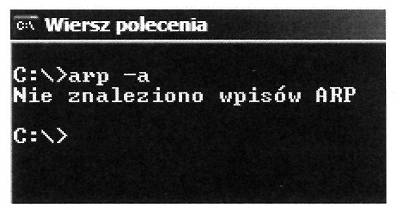
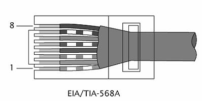
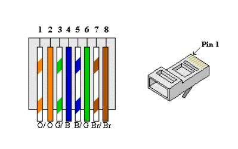
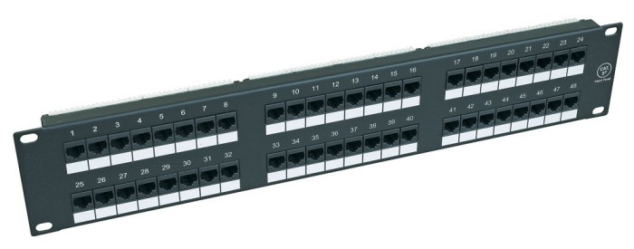

Baza wszystkich pytań E.13
1. Która warstwa modelu ISO/OSI jest związana z protokołem IP?
A. Sieciowa
B. Fizyczna
C. Transportowa
D. Łącza danych
2. Jaką ilość rzeczywistych danych można przesłać w czasie 1 s przez łącze
synchroniczne o przepustowości 512 kbps, bez sprzętowej i programowej kompresji?
A. Około 5 kB
B. Około 55 kB
C. Ponad 64 kB
D. Ponad 500 kB
3. Wskaż urządzenie, które należy wykorzystać, aby podłączyć dwa
komputery do sieci Internet z dostępem przez sieć lokalną Ethernet, w której mamy do
dyspozycji tylko jeden adres IP
A. Router LAN
B. Spliter ADSL
C. Modem ISDN
D. Przełącznik LAN
4. W celu zdalnego i przy tym bezpiecznego administrowania systemem Linux
należy wykorzystać protokół
A. FTP
B. Telnet
C. SMTP
D. SSH2
5. Jakie połączenie z Internetem można udostępniać sieci lokalnej?
A. Wszystkie rodzaje połączeń
B. Połączenie o szybkości transmisji co najmniej 56 kb/s
C. Jedynie tzw. szybkie połączenia, tzn. powyżej 64 kb/s
D. Wszystkie połączenia oprócz połączeń modemem analogowym
6. Aby użytkownicy sieci lokalnej mogli przeglądać strony WWW protokołami
HTTP i HTTPS, brama internetowa musi przepuszczać ruch na portach
A. 80 i 434
B. 80 i 443
C. 90 i 434
D. 90 i 443
7. Podczas montażu sieci komputerowej, przy wierceniu otworów w
ścianach, NIE NALEŻY używać
A. okularów ochronnych
B. ubrania roboczego
C. obuwia roboczego
D. rękawic ochronnych
8. Wybierz medium, które w sieciach komputerowych zapewnia najszybszą
transmisję danych
A. Mikrofale
B. Fale radiowe
C. Kabel światłowodowy
D. Czteroparowy kabel kat. 5
9. Karta sieciowa standardu Fast Ethernet pozwala na transfer danych z
maksymalną szybkością
A. 100 MB/s
B. 100 Mbps
C. 10 MB/s
D. 10 Mbps
10. W celu uzyskania w sieci lokalnej prędkości przesyłania danych 100 Mbps
zastosowano karty sieciowe pracujące w standardzie Fast Ethernet, kabel standardu UTP w
odpowiedniej kategorii oraz przełącznik (switch) pracujący w standardzie Fast Ethernet. Sieć
taka jest wykonana w topologii
A. IEEE
B. BUS
C. RING
D. STAR
11. Który adres protokołu IP w wersji 4 ma prawidłową strukturę?
A. 192.21.140.16
B. 192.10.255.3A
C. 192.309.1.255
D. 192.0.FF.FF
12. Przydzielaniem numerów IP w sieci zajmuje się serwer
A. DHCP
B. DNS
C. WINS
D. NMP
13. Aby usunąć opisaną usterkę, należy
A. sprawdzić włączenie PROXY i ewentualnie włączyć
B. zmienić konfiguracje adresów IP i/lub masek podsieci im
odpowiadających w taki sposób, aby oba komputery znalazły się w tej samej podsieci
C. wyłączyć system NetBIOS NWLink we właściwościach połączeń LAN
komputerów
D. wyłączyć system NetBIOS przez TCP/IP w zaawansowanych ustawieniach
TCP/IP kart sieciowych
14. Zrzut ekranu przedstawia efekt polecenia arp -a. Jak należy
zinterpretować tę informację?

A. Adres fizyczny hosta jest błędny
B. Komputerowi przypisano błędny adres IP
C. Brak bieżących wpisów protokołu ARP
D. Host nie ma połączenia z Internetem
15. Usługa Windows XP Professional "Mostek sieciowy" pozwala na łączenie ze
sobą
A. segmentów sieci LAN
B. dwóch komputerów
C. roboczych stacji bezdyskowych
D. klienta z serwerem
16. Numer IP przypisany komputerowi umożliwia odbiorcy pakietu IP
rozróżnienie identyfikatorów
A. sieci i bramy
B. sieci i hosta
C. hosta i rutera
D. hosta i bramy
17. Polecenie tracert to narzędzie diagnostyczne, które ustala
A. ścieżkę do lokalizacji docelowej
B. sprawność połączenia przy użyciu protokołu IPX/SPX
C. poprawność konfiguracji protokołu TCP/IP
D. możliwość diagnozowania infrastruktury systemu DNS
18. Włączenie usługi Udostępnienie połączenia internetowego w systemie
Windows uruchamia automatyczne nadawanie adresów IP dla komputerów
(hostów) z niej korzystających. W tym celu wykorzystywana jest usługa
A. WINS
B. NFS
C. DHCP
D. DNS
19. Komputery przenośne są z reguły wyposażone w bezprzewodowe sieci LAN.
Ograniczenia ich użytkowania dotyczą emisji fal radiowych mogących zakłócać działanie
innych, ważnych dla bezpieczeństwa, urządzeń
A. w pociągu
B. w samolocie
C. w biurze
D. w mieszkaniu
20. Aby użytkownicy sieci lokalnej mogli przeglądać strony WWW protokołami
HTTP i HTTPS, brama internetowa musi przepuszczać ruch na portach
A. 80 i 434
B. 80 i 443
C. 90 i 434
D. 90 i 443
21. Na zdjęciu przedstawiono
A. terminator BNC
B. zastępczy wtyk RJ-45
C. zaślepkę gniazda RJ-45
D. zaślepkę kabla światłowodowego
22. Zdjęcie przedstawia
A. wtyk audio
B. wtyk światłowodu
C. przedłużacz kabla UTP
D. wtyk kabla koncentrycznego
23. Które z wymienionych poleceń w systemie Windows XP służy do
sprawdzenia bieżącej konfiguracji IP systemu Windows?
A. tcpconfig
B. ipconfig
C. configip
D. ipedit
24. Urządzenie ADSL służy do uzyskania połączenia
A. radiowego
B. satelitarnego
C. cyfrowego symetrycznego
D. cyfrowego asymetrycznego
25. Jednostką opisującą szybkość transmisji danych w sieciach komputerowych
jest
A. dpi
B. ips
C. bps
D. mips
26. W systemie Windows XP na komputerze klienckim, plik "hosts" jest plikiem
tekstowym, który służy do mapowania
A. dysków twardych
B. nazw hostów na adresy IP
C. nazw hostów na adresy MAC
D. nazw hostów przez serwery DNS
27. Do połączenia kilku komputerów w sieć lokalną można użyć
A. most
B. router
C. RAMDAC
D. modem
28. Serwer DNS jest serwerem
A. usług terminalowych
B. zdalnego i szyfrowanego dostępu
C. dynamicznie przydzielającym adresy IP
D. dzięki któremu nazwy mnemoniczne (opisowe) mogą zostać zamienione
na odpowiadające im adresy IP
29. Numer IP zapisuje się w postaci czterech, oddzielonych od siebie kropkami
A. oktetów
B. dekad
C. helów
D. bitów
30. Komputer ma dostęp do Internetu poprzez sieć lokalną. Wpisując w
przeglądarce internetowej adres www.wp.pl użytkownik nie ma dostępu do strony WWW, natomiast
wpisanie adresu IP np. 212.77.100.101 pozwala otworzyć tę stronę. Co może być tego
przyczyną?
A. Brak serwera DNS
B. Brak adresu bramy
C. Brak serwera WINS
D. Brak serwera PROXY
31. Który z wymienionych adresów IP v.4 jest adresem klasy C?
A. 10.0.2.0
B. 223.0.10.1
C. 191.11.0.10
D. 126.110.10.0
32. Adres IP v.4 ma długość
A. 2 bajty
B. 16 bitów
C. 32 bitów
D. 10 bajtów
33. Jakie polecenie w systemach Windows/Linux jest zwyczajowo stosowane do
śledzenia trasy pakietów w sieciach IP?
A. ping
B. router
C. tracert/traceroute
D. netstat
34. Jaki przewód należy zastosować do instalacji sieci w
pomieszczeniach, w których występują silne pola zakłócające?
A. Ekranowany
B. Typu skrętka
C. Koncentryczny z transmisją szerokopasmową
D. Koncentryczny z transmisją w paśmie podstawowym
35. W systemie Windows moduł odpowiedzialny za internetowe usługi
informacyjne to
A. IIS
B. ISA
C. IIU
D. OSI
36. Jaka jest szybkość transferu danych w sieciach FDDI (ang. Fiber
Distributed Data Interface) opartych na technologii światłowodowej?
A. 100 Mb/s
B. 1024 Mb/s
C. 100 MB/s
D. 1024 kB/s
37. Który z wtyków należy zamontować na przewodzie UTP Cat 5e,
by podłączyć komputer do sieci?
A. BNC
B. RJ11
C. RJ45
D. MT-RJ
38. Maska podsieci /23 oznacza, że na pierwszych 23 bitach 32-cyfrowej liczby
binarnej znajdują się jedynki, a na pozostałych zera. Jak będzie zapisana ta maska w
systemie dziesiętnym, jeżeli każdym kolejnym 8 bitom odpowiada jedna liczba dziesiętna?
A. 255.255.0.0
B. 255.255.254.0
C. 255.255.255.0
D. 255.255.255.128
39. Przedstawiono wynik uzyskany po uruchomieniu w systemie Windows polecenia
IPCONFIG /ALL. Jak zostały skonfigurowane właściwości protokołu TCP/IP dla karty sieciowej?
A. Karta sieciowa nie ma ustawionego adresu bramy
B. Karta sieciowa uzyskała adres IP automatycznie
C. Karta sieciowa ma przydzielony statyczny adres IP
D. Karta sieciowa nie ma ustawionego adresu serwera DNS
40. Który standard z grupy IEEE 802 jest związany z sieciami
bezprzewodowymi, tzw. Wireless LAN?
A. IEEE 802.3
B. IEEE 802.5
C. IEEE 802.11
D. IEEE 802.15
41. Jaki protokół służy do translacji pomiędzy publicznymi i
prywatnymi adresami IP?
A. ARP
B. NAT
C. RARP
D. SNMP
42. Stacja robocza ma należeć do tej samej podsieci co serwer o adresie IP
192.168.10.150 i masce 255.255.255.192. Który z adresów IP należy ustawić we
właściwościach protokołu TCP/IP karty sieciowej stacji roboczej?
A. 192.168.10.1
B. 192.168.11.130
C. 192.168.10.190
D. 192.168.10.220
43. Urządzenie ADSL służy do uzyskania połączenia
A. radiowego
B. satelitarnego
C. cyfrowego symetrycznego
D. cyfrowego asymetrycznego
44. Komputer ma dostęp do Internetu poprzez sieć lokalną. Wpisując w
przeglądarce internetowej adres www.wp.pl użytkownik nie ma dostępu do strony WWW, natomiast
wpisanie adresu IP np. 212.77.100.101 pozwala otworzyć tę stronę. Co może być tego
przyczyną?
A. Brak serwera DNS
B. Brak adresu bramy
C. Brak serwera WINS
D. Brak serwera PROXY
45. Wybierz medium, które w sieciach komputerowych zapewnia najszybszą
transmisję danych
A. Mikrofale
B. Fale radiowe
C. Kabel światłowodowy
D. Czteroparowy kabel kat. 5
46. Jaką liczbę adresów urządzeń sieciowych zapewnia do dyspozycji
stosowanie klasy adresowej C w sieciach opartych na rodzinie protokołów TCP/IP?
A. 100
B. 200
C. 254
D. 256
47. Który adres protokołu IP w wersji 4 ma prawidłową strukturę?
A. 192.21.140.1
B. 192.10.255.3A
C. 192.309.1.255
D. 192.0.FF.FF
48. Adres IP urządzenia umożliwiającego innym komputerom w sieci lokalnej
dostęp do Internetu, to adres
A. DNS
B. WINS
C. proxy
D. bramy (routera)
49. Skrót MAN oznacza sieć
A. miejską
B. lokalną
C. rozległą
D. bezprzewodową
50. Architektura fizyczna sieci, zwana inaczej topologią fizyczną sieci
komputerowych określa
A. sposób połączenia ze sobą komputerów
B. standardy komunikacyjne sieci komputerowych
C. wzajemną komunikację komputerów pomiędzy sobą
D. przekaz informacji pomiędzy protokołami sieciowymi modelu OSI
51. System umożliwiający przetłumaczenie nazwy komputera na adres IP w sieci
to
A. ARP
B. DNS
C. ICMP
D. NetBEUI
52. Rysunek przedstawia topologię
A. siatki
B. gwiazdy
C. magistrali
D. pierścienia
53. Active Directory w systemach MS Windows Server 2000 i MS Windows Server
2003 to
A. baza danych zawierająca informacje o użytkownikach sieci, ich hasłach
dostępu i uprawnieniach
B. logiczna grupa komputerów, które mają możliwość
komunikowania się w sieci i wzajemnego udostępniania zasobów
C. grupa komputerów połączonych w sieć, składająca się z serwera
pełniącego rolę kontrolera oraz stacji roboczych – klientów
D. usługa katalogowa, która przechowuje informacje dotyczące
obiektów w sieci i udostępnia je użytkownikom oraz administratorom sieci
54. Przełącznik sieciowy standardu Fast Ethernet umożliwia transmisję danych
z maksymalną prędkością
A. 100 Mbps
B. 100 MB/s
C. 10 Mbps
D. 10 MB/s
55. W sieci lokalnej zainstalowano serwer, który ma za zadanie
przydzielanie dynamicznego adresu IP. Jaka usługa musi być uruchomiona na tym serwerze?
A. ISA
B. DNS
C. DCHP
D. DHCP
56. Użytkownik sieci lokalnej musi mieć możliwość korzystania z plików
znajdujących się na serwerze sieciowym. W tym celu powinien
A. zalogować się do domeny serwera i posiadać odpowiednie uprawnienia do
plików znajdujących się na serwerze
B. podłączyć komputer do tego samego przełącznika, do którego
podłączony jest serwer
C. mieć założone konto użytkownika bez praw administracyjnych na tym
serwerze
D. być członkiem grupy administratorzy na tym serwerze
57. W firmie zainstalowano pięć komputerów o adresach kart sieciowych
podanych w tabeli. W związku z tym można wyróżnić
A. 1 sieć
B. 2 podsieci
C. 3 podsieci
D. 5 podsieci
58. W budynku biurowym należy podłączyć komputer do routera ADSL przy użyciu
przewodu UTP Cat 5e. Maksymalna odległość pomiędzy komputerem, a routerem powinna wynosić
A. 50 m
B. 100 m
C. 185 m
D. 500 m
59. Do bezpośredniego połączenia ze sobą dwóch komputerów w
przewodowej sieci LAN należy użyć
A. kabla USB i po jednej karcie sieciowej w każdym komputerze
B. kabla sieciowego patch-cord bez krosowania i kabla Centronics
C. kabla światłowodowego i jedną kartę sieciową w jednym komputerze
D. kabla sieciowego cross-over i po jednej karcie sieciowej w każdym
komputerze
60. Przedstawiony stan ekranu terminala uzyskano w wyniku testu
przeprowadzonego w systemie Windows. Pracownik serwisu uzyskał w ten sposób
informację o:
A. ścieżce do lokalizacji docelowej
B. sprawności połączenia przy użyciu protokołu IPX/SPX
C. poprawności konfiguracji protokołu TCP/IP
D. możliwości diagnozowania infrastruktury systemu DNS
61. Bezprzewodowy dostęp komputera do sieci Internet poprzez tzw hotspot
będzie możliwy po zainstalowaniu w nim karty sieciowej wyposażonej w
A. moduł WiFi
B. złącze USB
C. gniazdo RJ-45
D. interfejs RS-232C
62. Adres IP 158.75.60.16 należy do adresów
A. klasy D
B. klasy C
C. klasy B
D. klasy A
63. Adresy IPv6 są liczbami
A. 32 bitowymi wyrażanymi w postaci napisów binarnych
B. 64 bitowymi wyrażanymi w postaci napisów binarnych
C. 256 bitowymi wyrażanymi w postaci napisów szesnastkowych
D. 128 bitowymi wyrażanymi w postaci napisów szesnastkowych
64. W jakiej fizycznej topologii uszkodzenie jednej stacji roboczej zatrzyma
działanie całej sieci?
A. Siatki
B. Drzewa
C. Magistrali
D. Pierścienia
65. Technika ADSL umożliwia uzyskanie połączenia DSL
A. z różnymi szybkościami w kierunku od i do abonenta
B. o takiej samej szybkości w kierunku od i do abonenta
C. o bardzo dużej szybkości, powyżej 13 Mb/s
D. za pośrednictwem linii ISDN
66. Przesyłanie ruchu sieciowego poprzez router, które wiąże się ze
zmianą źródłowych lub docelowych adresów IP, oznacza się skrótem
A. IIS
B. NAT
C. FTP
D. IANA
67. Lokalnej podsieci komputerowej nadano adres IP 172.16.10.0/24. Komputer1
ma adres IP 172.16.0.10, komputer2 - 172.16.10.100, a komputer3 - 172.16.255.20.
Który z komputerów należy do tej podsieci?
A. Wyłącznie komputer1 o adresie IP 172.16.0.10
B. Wyłącznie komputer2 o adresie IP 172.16.10.100
C. Wyłącznie komputer3 o adresie IP 172.16.255.20
D. Wszystkie trzy wymienione komputery
68. Komputer ma pełnić rolę serwera sieci lokalnej, udostępniającego innym
komputerom połączenie z Internetem przez podłączenie do gniazda sieci rozległej za pomocą
kabla UTP Cat 5e. Obecnie komputer jest jedynie podłączony do switcha sieci lokalnej
również kablem UTP Cat 5e, nie posiada innych gniazd 8P8C. O jaki element musi być on
koniecznie rozbudowany?
A. O szybszy procesor
B. O drugą kartę sieciową
C. O większą pamięć RAM
D. O dodatkowy dysk twardy
69. Który protokół wykorzystują komputery do powiadomienia
rutera o chęci przyłączenia się lub odejścia z określonej grupy rozgłoszeniowej?
A. TCP/IP
B. IGMP
C. DHCP
D. UDP
70. Który standard realizacji sieci Ethernet, definiuje sieć zbudowaną
na kablu koncentrycznym, odługości segmentu nie przekraczającym 185 m?
A. 100Base-T4
B. 10Base-2
C. 100Base-T2
D. 10Base-5
71. Protokołem dostępu do sieci pakietowej z szybkością nie przekraczającą 2
Mbit/s jest protokół
A. Frame Relay
B. ATM
C. VDSL
D. X . 25
72. Który protokół wykorzystują komputery do powiadomienia
rutera o członkostwie w danej grupie rozgłoszeniowej?
A. RIP
B. UDP
C. IGMP
D. OSPF
73. W okablowaniu strukturalnym opartym na skrętce UTP kat. 6, należy
stosować gniazda sieciowe typu
A. F
B. 8P8C
C. RJ-11
D. BNC
74. Grupa, w której uprawnienia członków można przypisywać
tylko w obrębie tej samej domeny, co domena nadrzędnej grupy lokalnej domeny, to grupa
A. lokalna domeny
B. uniwersalna
C. lokalna komputera
D. globalna
75. Który protokół komunikacyjny służy do transferu
plików w układzie klient-serwer oraz może działać w dwóch trybach: aktywnym i
pasywnym?
A. DNS
B. IP
C. FTP
D. EI-SI
76. Na rysunku przedstawiono sieć komputerową w topologii
A. mieszanej
B. magistrali
C. pierścienia
D. gwiazdy
77. Jaki jest maksymalny rozmiar pojedynczego datagramu IPv4, którego
wielkość liczona jest wraz z jego nagłówkiem?
A. 64 kB
B. 32 kB
C. 128 kB
D. 256 kB
78. Którego protokołu należy użyć do odbioru poczty elektronicznej ze
swojego serwera?
A. FTP
B. POP3
C. SNMP
D. SMTP
79. Który protokół zapewnia szyfrowanie połączenia?
A. DHCP
B. DNS
C. TELNET
D. SSH
80. Na rysunku przedstawiono przekrój kabla
A. optycznego
B. U/UTP
C. koncentrycznego
D. S/UTP
81. W adresie IP należącym do klasy A, wartość pierwszego bajtu jest zawarta
w przedziale
A. 192 - 223
B. 128 - 191
C. 224 - 240
D. 0 - 127
82. Które polecenie w systemie Windows przeznaczonym dla stacji
roboczej, służy do ustawienia wymagań dotyczących logowania dla wszystkich kont
użytkowników tej stacji roboczej
A. Net file
B. Net accounts
C. Net session
D. Net computer
83. Do prawidłowego działania telefonu VoIP konieczne jest skonfigurowanie
adresu
A. rozgłoszeniowego
B. MAR/MAV
C. centrali ISDN
D. IP
84. Które szyfrowanie stosowane w sieciach bezprzewodowych, jest
najmniej odporne na łamanie haseł?
A. WPA TKIP
B. WEP
C. WPA2
D. WPA AES
85. Na rysunku przedstawiono urządzenie do
A. zaciskania złącz BNC
B. zdejmowania izolacji z kabli
C. zaciskania złącz RJ-45
D. montażu okablowania w gnieździe sieciowym
86. Z jakim parametrem należy wywołać polecenie netstat, aby została
wyświetlona statystyka interfejsu sieciowego (liczba wysłanych oraz odebranych bajtów
i pakietów)?
A. -n
B. -a
C. -e
D. -o
87. Zadaniem serwera plików w sieciach komputerowych LAN jest
A. wspólne użytkowanie tych samych zasobów
B. sterowanie danymi na komputerach lokalnych
C. wykonywanie procesów obliczeniowych na komputerach lokalnych
D. zarządzanie pracą przełączników i ruterów
88. Którą konfigurację sieciową może mieć komputer należący do tej
samej sieci LAN, co komputer o adresie 192.168.1.10/24?
A. 192.168.1.11 i 255.255.255.0
B. 192.168.0.11 i 255.255.0.0
C. 192.168.0.11 i 255.255.255.0
D. 192.168.1.11 i 255.255.0.0
89. Profil mobilny zmieniany jest w profil obowiązkowy użytkownika po
A. usunięciu pliku NTUSER.DAT
B. usunięciu pliku NTUSER.MAN
C. zmianie nazwy pliku NTUSER.MAN na NTUSER.DAT
D. zmianie nazwy pliku NTUSER.DAT na NTUSER.MAN
90. Rysunek przedstawia wynik testowania sieci komputerowej poleceniem
A. ping
B. tracert
C. netstat
D. ipconfig
91. Jaką postać ma adres IP 192.168.1.12 w zapisie binarnym?
A. 11000100.10101010.00000101.00001001
B. 11000001.10111000.00000011.00001110
C. 11000010.10101100.00000111.00001101
D. 11000000.10101000.00000001.00001100
92. Polecenie dsadd umożliwia
A. przenoszenie obiektów w obrębie jednej domeny
B. usuwanie użytkowników, grup, komputerów, kontaktów
i jednostek organizacyjnych do usługi Active Directory
C. dodawanie użytkowników, grup, komputerów, kontaktów
i jednostek organizacyjnych do usługi Active Directory
D. zmianę właściwości obiektów w katalogu
93. Konwencja zapisu ścieżki do udziału sieciowego zgodna z UNC (Universal
Naming Convention) ma postać
A. //nazwa_komputera/nazwa_zasobu
B. \\nazwa_zasobu\nazwa_komputera
C. //nazwa_zasobu/nazwa_komputera
D. \\nazwa_komputera\nazwa_zasobu
94. Jaki jest największy adres IP w podsieci 196.10.20.0/26?
A. 196.10.20.0
B. 196.10.20.1
C. 196.10.20.63
D. 196.10.20.64
95. W wyniku polecenia ipconfig została wyświetlona konfiguracja
przedstawiona na rysunku. Adres IP testowanej stacji roboczej ma postać
A. 62.21.99.95
B. 192.168.0.1
C. 255.255.255.0
D. 192.168.0.11
96. Miarą podawaną w decybelach, będącą różnicą mocy sygnału
przesyłanego w parze zakłócającej i sygnału wytworzonego w parze zakłócanej
jest
A. poziomu mocy wyjściowej
B. przesłuch zbliżny
C. przesłuch zdalny
D. rezystancja pętli
97. Rysunek przedstawia panel konfiguracyjny bezprzewodowego urządzenia
dostępowego, który umożliwia
A. przypisanie adresów MAC kart sieciowych
B. konfigurację serwera DHCP
C. przypisanie maski podsieci
D. nadanie nazwy hosta
98. Do sprawdzenia adresów MAC komputerów podłączonych do
przełącznika, można użyć polecenia
A. clear mac address-table
B. ip http port
C. show mac address-table
D. ip http serwer
99. Urządzenie sieciowe most (ang. bridge):
A. pracuje w zerowej warstwie modelu OSI
B. pracuje w ósmej warstwie modelu OSI
C. jest urządzeniem typu store and forward
D. nie analizuje ramki pod kątem adresu MAC
100. Narzędzie administracyjne wiersza polecenia umożliwiające testowanie i
rozwiązywanie problemów z serwerami DNS to:
A. CHKDSK
B. NSLOOKUP
C. CMD
D. DHCP
101. Który protokół jest używany przez usługę VPN, w celu
zhermetyzowania pakietów IP w sieci publicznej?
A. SNMP
B. PPTP
C. HTTP
D. SMTP
102. Maska dla adresu IP 192.168.1.10/8 ma postać
A. 255.255.255.0
B. 255.0.0.0
C. 255.255.0.0
D. 255.0.255.0
103. Które oznaczenie określa normę dotyczącą okablowania
strukturalnego?
A. ISO 11801
B. EIA/TIA 568A
C. PN-EN 50173-1:2004
D. EN 50173
104. Polecenie Gpresult
A. wyświetla informacje o kontrolerze
B. wyświetla wynikowy zestaw zasad dla użytkownika lub komputera
C. aktualizuje ustawienia zasad grupy
D. przywraca domyślne zasady grup dla kontrolera
105. Do zabezpieczenia systemów sieciowych przed atakami z zewnątrz
należy użyć
A. protokołu SSH
B. menadżera połączeń
C. zapory sieciowej
D. serwera DHCP
106. Na rysunku przedstawiono
A. kartę sieciową
B. patch panel
C. przełącznik
D. koncentrator
107. Która usługa polega na scentralizowanym zarządzaniu
tożsamościami, uprawnieniami oraz obiektami w sieci?
A. DHCP (Dynamic Host Configuration Protocol)
B. WDS (Windows Deployment Services)
C. NFS (Network File System).
D. AD (Active Directory)
108. Na rysunku przedstawiono symbol graficzny
A. rutera
B. mostu
C. regeneratora
D. koncentratora
109. Najwyższy poziom bezpieczeństwa sieci bezprzewodowej zapewni szyfrowanie
A. WPA
B. WEP
C. WPA2
D. ROT13
110. Który z adresów IP jest adresem prywatnym?
A. 38.176.55.44
B. 131.107.5.65
C. 190.5.7.126
D. 192.168.0.1
111. Jaki protokół odpowiada za zamianę adresów IP na adresy
kontroli dostępu do nośnika (MAC)?
A. RARP
B. SNMP
C. ARP
D. SMTP
112. Do śledzenia trasy datagramu IP do punktu docelowego służy polecenie
A. nslookup
B. ping
C. route
D. tracert
113. Jaki jest maksymalny rozmiar pojedynczego datagramu IPv4, którego
wielkość liczona jest wraz z jego nagłówkiem?
A. 32 kB
B. 128 kB
C. 64 kB
D. 256 kB
114. Ile maksymalnie kanałów, z dostępnego spectrum kanałów
standardu 802.11b, można wykorzystywać na terenie Polski?
A. 10 kanałów
B. 9 kanałów
C. 11 kanałów
D. 13 kanałów
115. W technologii Ethernet 100BaseTX wymagane jest stosowanie skrętki
A. kategorii 1
B. kategorii 3
C. kategorii 2
D. kategorii 5
116. Każdy kolejny router IP na trasie pakietu
A. zwiększa wartość TTL przekazywanego pakietu o dwa
B. zmniejsza wartość TTL przekazywanego pakietu o dwa
C. zwiększa wartość TTL przekazywanego pakietu o jeden
D. zmniejsza wartość TTL przekazywanego pakietu o jeden
117. Przekazywanie żetonu (ang. token), występuje w sieci o strukturze
fizycznej
A. magistrali
B. siatki
C. gwiazdy
D. pierścienia
118. W sieci Ethernet 100BaseTX dla transmisji danych wykorzystywane są żyły
kabla UTP dołączone do pinów

A. 1, 2, 3, 4
B. 1, 2, 5, 6
C. 4, 5, 6, 7
D. 1, 2, 3, 6
119. Który standard wykorzystuje częstotliwość 5 GHz?
A. 802.11g
B. 802.11a
C. 802.11b
D. 802.11
120. System operacyjny nie zajmuje się
A. planowaniem oraz przydziałem czasu procesora poszczególnym
zadaniom
B. tworzeniem źródeł aplikacji systemowych
C. kontrolą i przydziałem pamięci operacyjnej dla uruchomionych zadań
D. dostarczaniem mechanizmów do synchronizacji zadań i komunikacji
pomiędzy zadaniami
121. Do cech pojedynczego konta użytkownika pracującego w systemie Windows
Serwer należy
A. maksymalna wielkość profilu użytkownika
B. maksymalna wielkość pulpitu użytkownika
C. numer telefonu, pod który ma oddzwonić serwer w przypadku
nawiązania połączenia telefonicznego przez tego użytkownika
D. maksymalna wielkość pojedynczego pliku jaką użytkownik może zapisać na
dysku serwera
122. Który z protokołów jest protokołem synchronizacji czasu?
A. NNTP
B. FTP
C. HTTP
D. NTP
123. Rolą routera jest
A. tłumaczenie nazwy na adresy IP
B. przekazywanie pakietów TCP/IP z sieci źródłowej do
docelowej
C. wyeliminowanie kolizji
D. zabezpieczenia sieci przed atakiem z zewnątrz i z wewnątrz
124. Wskaż domyślny port do przekazywania poleceń (command) serwera usługi
FTP
A. 25
B. 110
C. 20
D. 21
125. Jakie narzędzie należy wybrać, aby podłączyć żyły kablowe skrętki do
gniazda Ethernet?
A. Zaciskarkę RJ-45
B. Zaciskarkę BNC
C. Zaciskarkę RJ-11
D. Wciskacz LSA
126. Który protokół wykorzystywany jest przez polecenie ping?
A. ICMP
B. RDP
C. LDAP
D. FTP
127. Jaki jest domyślny port serwera usługi WWW?
A. 80
B. 800
C. 8081
D. 8080
128. W standardzie IEEE 802.3af dostarczanie energii elektrycznej do
różnych urządzeń sieciowych opisuje technologia
A. Power over Ethernet
B. Power over Classifications
C. Power under Control
D. Power over Internet
129. W firmowej sieci bezprzewodowej została uruchomiona usługa polegająca na
tłumaczeniu nazw mnemonicznych. Jest to usługa
A. DNS
B. RDS
C. DHCP
D. RADIUS
130. Granicy dla domeny kolizyjnej nie wyznaczają porty urządzeń takich jak
A. most (ang. bridge)
B. router
C. przełącznik (ang. switch)
D. koncentrator (ang. hub)
131. Jaki adres IP odpowiada nazwie mnemonicznej localhost?
A. 192.168.1.255
B. 192.168.1.1
C. 127.0.0.1
D. 192.168.1.0
132. Sieć Ethernet pracuje w logicznej topologii
A. siatkowej
B. rozgłaszania
C. siatki i gwiazdy
D. pierścieniowej i liniowej
133. Sieć o adresie 192.168.1.128/29 pozwala na podłączenie
A. 6 hostów
B. 16 hostów
C. 8 hostów
D. 12 hostów
134. Translacją nazw domenowych na adresy sieciowe zajmuje się usługa
A. SMTP
B. DHCP
C. SNMP
D. DNS
135. Które z podanych oznaczeń określa, że jest to kabel typu skrętka
posiadający podwójne ekranowanie?
A. FTP
B. S-STP
C. UTP
D. SFTP
136. Podstawową funkcją serwera FTP jest
A. synchronizacja czasu
B. zarządzanie kontami poczty
C. udostępnianie plików
D. monitoring sieci
137. Który protokół obsługuje rozproszone wysyłanie i
pobieranie plików?
A. BitTorrent
B. HTTPS
C. Radius
D. FTP
138. W adresowaniu klasowym adres IP 74.100.7.8 należy do
A. klasy A
B. klasy D
C. klasy B
D. klasy C
139. Wskaż poprawną postać maski
A. 255.255.255.192
B. 255.255.255.228
C. 255.255.255.96
D. 255.255.255.64
140. Litera S w protokole FTPS oznacza zabezpieczanie przesyłanych danych
poprzez
A. logowanie
B. uwierzytelnianie
C. autoryzację
D. szyfrowanie
141. Który z protokołów jest protokołem wykorzystywanym do
zarządzania urządzeniami sieciowymi?
A. DNS
B. SFTP
C. SNMP
D. SMTP
142. Poprawny adres komputera dla maski 255.255.255.0, to adres
A. 192.168.1.1
B. 122.168.1.0
C. 192.168.1.255
D. 122.0.0.255
143. Wskaż prawidłową postać maski podsieci
A. 255.255.255.255
B. 255.252.252.255
C. 255.255.0.128
D. 0.0.0.0
144. AES (ang. Advanced Encryption Standard)
A. jest poprzednikiem DES (ang. Data Encryption Standard)
B. nie może być wykorzystany przy szyfrowaniu plików
C. wykorzystuje symetryczny algorytm szyfrujący
D. nie może być zaimplementowany sprzętowo
145. Jaki protokół jest wykorzystywany podczas inicjacji sesji VoIP?
A. SIP
B. MCGP
C. MIME
D. SDP
146. Który z protokołów jest szyfrowanym protokołem
terminalowym?
A. POP3
B. telnet
C. SSH
D. TFTP
147. Najszybszą możliwą transmisję danych w sieci bezprzewodowej umożliwia
standard
A. 802.11n
B. 802.11b
C. 802.11a
D. 802.11g
148. Urządzenie, które łączy segmenty sieci i przekazuje ramki między
segmentami tej sieci z doborem portu urządzenia, do którego są przekazywane
poszczególne ramki, to
A. koncentrator
B. przełącznik
C. rejestrator
D. zasilacz awaryjny
149. Na rysunku przedstawiono sieć o topologii
A. siatki
B. drzewa
C. gwiazdy
D. magistrali
150. Jaka przepływność definiuje standard sieci Ethernet IEEE 802.3z
A. 1 Gb/s
B. 10 Mb/s
C. 100 Mb/s
D. 100 Gb/s
151. Norma IEEE 802.11b jest standardem sieci
A. telefonicznych
B. przewodowych
C. światłowodowych
D. bezprzewodowych
152. Standard transmisji Gigabit Ethernet opisuje norma
A. IEEE 802.3i
B. IEEE 802.3u
C. IEEE 802.3x
D. IEEE 802.3ab
153. Fast Ethernet to standard sieci przewodowej, umożliwiający transmisję
danych z maksymalną prędkością
A. 54 Mbps
B. 100 Mbps
C. 108 Mbps
D. 1000 Mbps
154. Ile par przewodów jest przeznaczonych w standardzie 100Base-TX do
transmisji danych w obu kierunkach?
A. 1
B. 2
C. 4
D. 8
155. Norma EN 50167 dotyczy okablowania
A. pionowego
B. poziomego
C. szkieletowego
D. kampusowego
156. Która norma zawiera specyfikację parametrów transmisyjnych
komponentów kategorii 5e?
A. CSA T527
B. EIA/TIA 607
C. TIA/EIA-568-B-1
D. TIA/EIA-568-B-2
157. Protokołem pakietów użytkownika wykonującym usługę
bezpołączeniowego dostarczania datagramów jest
A. IP
B. TCP
C. ARP
D. UDP
158. Na rysunku przedstawiono tylny panel
A. routera
B. mostu
C. modemu
D. koncentratora
159. Symbol graficzny przedstawiony na rysunku oznacza
A. most
B. bramę
C. przełącznik
D. koncentrator
160. Sieci lokalne typu klient-serwer charakteryzują się tym, że
A. każdy komputer w sieci jest równoprawny z pozostałymi
B. istnieje jeden wydzielony komputer udostępniający swoje zasoby w sieci
C. żaden z komputerów nie pełni roli nadrzędnej w stosunku do
pozostałych
D. wszystkie komputery klienckie mają dostęp do zasobów pozostałych
komputerów
161. Do której warstwy modelu ISO/OSI należy segmentowanie danych,
komunikacja w trybie połączeniowym z wykorzystaniem protokołu TCP oraz komunikacja w trybie
bezpołączeniowym z wykorzystaniem protokołu UDP?
A. Fizycznej
B. Sieciowej
C. Łącza danych
D. Transportowej
162. Wyznaczanie optymalnej trasy dla połączenia sieciowego to
A. routing
B. sniffing
C. tracking
D. conntrack
163. W sieci strukturalnej zalecane jest umieszczenie jednego punktu
abonenckiego na powierzchni o wielkości
A. 5m^2
B. 10m^2
C. 20m^2
D. 30m^2
164. Okablowanie pionowe w sieci strukturalnej łączy
A. dwa gniazda abonenckie
B. główny punkt rozdzielczy z gniazdem abonenckim
C. pośredni punkt rozdzielczy z gniazdem abonenckim
D. główny punkt rozdzielczy z pośrednimi punktami rozdzielczymi
165. Które urządzenie służy do połączenia sieci lokalnej z siecią
rozległą?
A. Most
B. Router
C. Przełącznik
D. Koncentrator
166. Administrator zauważył, że w sieci LAN występuje duża liczba kolizji.
Które urządzenie powinien zainstalować, aby podzielić sieć lokalną na mniejszy domeny
kolizji?
A. Router
B. Modem
C. Przełącznik
D. Koncentrator
167. Która antena charakteryzuje się największym zyskiem energetycznym
oraz umożliwia zestawienie połączenia na dużą odległość?
A. Dipolowa
B. Izotropowa
C. Paraboliczna
D. Mikropaskowa
168. Oblicz koszt brutto kabla UTP Cat 6 użytego do połączenia 5
punktów abonenckich z punktem dystrybucyjnym, wiedząc, że średnia długość pomiędzy
punktem abonenckim a punktem dystrybucyjnym wynosi 8 m oraz że cena brutto 1 m kabla wynosi
1 zł. Przy obliczeniach należy uwzględnić zapas 2m kabla na każdy punkt abonencki.
A. 32 zł
B. 40 zł
C. 45 zł
D. 50 zł
169. Który typ kabla należy zastosować do podłączenia komputera w
pomieszczeniu z zakłóceniami elektromagnetycznymi?
A. UTP Cat 5
B. UTP Cat 6
C. UTP Cat 5e
D. FTP Cat 5e
170. W celu sprawdzenia mapy podłączeń kabla UTP Cat 5e w sieci lokalnej
należy użyć
A. testera okablowania
B. reflektometru kablowego TDR
C. reflektometru optycznego OTDR
D. analizatora protokołów sieciowych
171. Ile maksymalnie hostów można zaadresować w sieci lokalnej, mając
do dyspozycji jedną klasę C adresów protokołu IPv4?
A. 254
B. 255
C. 510
D. 512
172. Który z adresów IP należy do klasy B?
A. 96.15.2.4
B. 100.10.10.2
C. 134.192.16.1
D. 198.15.110.112
173. Sieć o adresie IP 192.168.2.0/24 podzielono na cztery podsieci. Jaką
maskę posiadają nowe podsieci?
A. 255.255.255.128
B. 255.255.255.192
C. 255.255.255.224
D. 225.225.225.240
174. W ilu podsieciach pracują komputery o adresach: 192.168.5.12/25,
192.168.5.200/25 i 192.158.5.250/25?
A. 1
B. 2
C. 3
D. 4
175. Instalowanie w systemie operacyjnym Windows Server usługi Active
Directory wymaga wcześniejszego zainstalowania i skonfigurowania serwera
A. FTP
B. DNS
C. WWW
D. DHCP
176. Jeżeli na danej przestrzeni będą działały równocześnie dwie sieci
WLAN standardy 802.11g, to aby wyeliminować możliwość wzajemnych zakłóceń należy im
przydzielić kanały o numerach różniących się o
A. 2
B. 3
C. 4
D. 5
177. Program wykorzystywany do przechwytywania analizy ruchu sieciowego, to
A. viewer
B. sniffer
C. spywer
D. keylogger
178. Na zamieszczonym zrzucie panelu konfiguracyjnego rutera widać, że serwer
DHCP
A. może przydzielić maksymalnie 10 adresów IP
B. może przydzielić maksymalnie 154 adresy IP
C. przydziela adresy IP z zakresu 192.168.1.1 - 192.168.1.10
D. przydziela adresy IP z zakresu 192.168.1.1 - 192.168.1.100
179. Które polecenie w systemie Windows należy zastosować do
monitorowania listy aktywnych połączeń karty sieciowej w komputerze?
A. Ping
B. Telnet
C. Netstat
D. Ipconfig
180. Która usługa serwerowa zapewnia automatyczną konfigurację
parametrów sieciowych stacji roboczych?
A. NAT
B. DNS
C. DHCP
D. WINS
181. Jaką funkcję pełni ISA Server w systemie operacyjnym Windows?
A. Pełni funkcję firewalla
B. Rozwiązuje nazwy domenowe
C. Jest systemem wymiany plików
D. Jest serwerem stron internetowych
182. Która z grup w systemie Windows Serwer posiada najmniejsze
uprawnienia?
A. Wszyscy
B. Użytkownicy
C. Administratorzy
D. Operatorzy kont
183. Który z profili użytkownika ulega zmianie i jest przechowywany na
serwerze dla klienta pracującego w sieci Windows?
A. Mobilny
B. Lokalny
C. Tymczasowy
D. Obowiązkowy
184. Protokół pocztowy, za pomocą którego możemy odbierać
pocztę z serwera, to
A. FTP
B. POP3
C. SMTP
D. HTTP
185. Które zdanie opisuje protokół SSH (Secure Shell)?
A. Bezpieczny protokół terminalu sieciowego udostępniający usługi
szyfrowania połączenia
B. Protokół do zdalnej pracy na odległym komputerze nie zapewnia
kodowania transmisji
C. Sesje SSH powodują wysyłanie zwykłego tekstu, niezaszyfrowanych danych
D. Sesje SSH nie pozwalają określić, czy punkty końcowe są autentyczne
186. Który port jest wykorzystywany przez protokół FTP (File
transfer Protocol)
A. 20
B. 25
C. 53
D. 69
187. ARP (Adress Resolution Protocol) jest protokołem realizującym
odwzrowanie adresu IP na
A. adres poczty e-mail
B. nazwę domenową
C. nazwę komputera
D. adres sprzętowy.
188. Aby zabezpieczyć lokalną sieć komputerową przed atakami typu Smurf z
sieci Internet należy zainstalować i odpowiednio skonfigurować
A. zaporę ogniową
B. skaner antywirusowy
C. oprogramowanie antyspamowe
D. bezpieczną przeglądarkę stron WWW
189. Rysunek przedstawia schemat ethernetowego połączenia niekrosowanych,
ośmiopinowych złącz 8P8C. Schemat ten nosi nazwę:

A. T568A
B. T568B
C. T568C
D. T568D
190. Jaką nazwę nosi złącze stosowane w sieciach komputerowych przedstawione
na zdjęciu?
A. FC
B. BNC
C. ST
D. LC
191. Z ilu bitów składa się adres fizyczny MAC karty sieciowej?
A. 16
B. 32
C. 48
D. 64
192. Protokół, który umożliwia przekształcanie 32-bitowych
adresów IP na 48-bitowe fizyczne adresy MAC w komputerowych sieciach typu Ethernet
nosi nazwę:
A. ARP
B. NAT
C. RARP
D. DNS
193. Standard o nazwie IEEE 802.11 stosowany w lokalnych sieciach
komputerowych opisuje sieć:
A. Ethernet
B. Wireless LAN
C. Token Ring
D. Fiber Optic FDDI
194. Wskaż zdanie nieprawdziwe:
A. Zaletą topologii pierścienia jest małe zużycie kabla
B. Stroną aktywną w architekturze klient-serwer jest klient
C. IEEE 802.11 to nazwa standardu Wireless LAN
D. Awaria węzła w topologii gwiazdy spowoduje paraliż sieci
195. Rodzina adapterów wykonanych w technologii Powerline
umożliwiająca wykorzystanie sieci energetycznej w obrębie jednego domu/mieszkania do
przesyłania sygnału sieciowego nosi nazwę:
A. HomePlug
B. InternetOutlet
C. HomeOutlet
D. InternetPlug
196. Kod kontroli cyklicznej odpowiadający za korekcję błędów i
weryfikację poprawności danych otrzymywanych przez stację docelową nosi nazwę:
A. CAT
B. CNC
C. IRC
D. CRC
197. FDDI (ang. Fiber Distributed Data Interface) to standard transmisji
danych oparty na technologii światłowodowej. Jaką topologię stosujemy w sieciach wykonanych
wg tej technologii?
A. gwiazdy
B. rozszerzonej gwiazdy
C. pierścienia
D. podwójnego pierścienia
198. Translacja adresów źródłowych w ramach usługi NAT routera
umożliwiająca komputerom w sieci prywatnej dostęp do internetu nosi nazwę:
A. DNAT
B. LNAT
C. SNAT
D. WNAT
199. Usługą katalogową nie jest:
A. Active Directory
B. OpenLDAP
C. Novell eDirectory
D. Oracle baseDirectory
200. Który z podanych adresów IP nie jest adresem prywatnym?
A. 10.0.105.12
B. 127.231.5.67
C. 172.16.45.123
D. 192.168.199.223
201. W topologii fizycznej gwiazdy, wszystkie urządzenia pracujące w sieci,
są
A. podłączone do węzła sieci
B. podłączone do jednej magistrali
C. połączone z dwoma sąsiadującymi komputerami
D. połączone między sobą odcinkami kabla tworząc zamknięty pierścień
202. Który standard sieci LAN definiuje dostęp do medium na podstawie
tokenu (żetonu)?
A. IEEE 802.1
B. IEEE 802.2
C. IEEE 802.3
D. IEEE 802.5
203. Którym symbolem oznaczona jest skrętka nieekranowana?
A. U/FTP
B. S/FTP
C. U/UTP
D. F/UTP
204. Okablowanie strukturalne należy zaliczyć do infrastruktury
A. aktywnej
B. pasywnej
C. terytorialnej
D. dalekosiężnej
205. Ile warstw definiuje model ISO/OSI
A. 3
B. 5
C. 7
D. 9
206. Standard IEEE 802.11 definiuje sieci
A. Fast Ethernet
B. Gigabit Ethernet
C. Światłowodowe LAN
D. Bezprzewodowe LAN
207. Którą konfiguracje sieciową może mieć komputer należący do tej
samej sieci LAN, co komputer o adresie 10.8.1.10/24?
A. 10.8.0.101 i 255.255.255.0
B. 10.8.1.101 i 255.255.255.0
C. 10.8.0.101 i 255.255.0.0
D. 10.8.1.101 i 255.255.0.0
208. Przyrząd przedstawiony na rysunku jest stosowany do zaciskania
wtyków
A. SC
B. BNC
C. RJ 45
D. E 2000
209. Niezależną strukturą sieci WLAN jest
A. BSS
B. ESS
C. IBSS
D. BSS1
210. Adres IP (ang. Internet Protocol Address) jest
A. unikatowym numerem fabrycznym urządzenia
B. unikatową nazwą symboliczną urządzenia
C. adresem fizycznym komputera
D. adresem logicznym komputera
211. Które urządzenie należy zastosować do podłączenia
komputerów w topologii gwiazdy?
A. Bridge
B. Switch
C. Repeater
D. Transceiver
212. Skrót WAN oznacza
A. miejską sieć komputerową
B. lokalną sieć komputerową
C. rozległą sieć komputerową
D. prywatną sieć komputerową
213. W którym protokole sieciowym adres źródłowy składa się ze
128 bitów?
A. IPv4
B. IPv6
C. UDP
D. DNS
214. Który skrócony zapis odpowiada następującej masce
podsieci: 255.255.248.0?
A. /21
B. /22
C. /23
D. /24
215. Które polecenie należy zastosować do monitorowania lokalnych
połączeń?
A. dir
B. host
C. netstat
D. route add
216. Połączenia typu punkt-punkt, poprzez publiczną infrastrukturę
telekomunikacyjną, oznacza się skrótem
A. VPN
B. PAN
C. VLAN
D. WLAN
217. Jednostką szybkości transmisji danych w sieciach komputerowych jest
A. byte
B. bps
C. dpi
D. ips
218. Która wersja systemu operacyjnego Windows Server 2008 posiada
najbardziej okrojony interfejs graficzny
A. Enterprise
B. Datacenter
C. Server Core
D. Standard Edition
219. Który z wymienionych adresów protokołu IPv4 jest adresem
klasy D?
A. 10.0.3.5
B. 128.1.0.8
C. 191.12.0.18
D. 239.255.203.1
220. W Windows 7 konfigurację interfejsu sieciowego można wykonać, stosując
rozwinięcie polecenia
A. netsh
B. telnet
C. tracert
D. nslookup
221. Wykonanie polecenia net use Z:\\192.168.20.2\data /delete, spowoduje
A. odłączenie katalogu data od dysku Z:
B. przyłączenie katalogu data do dysku Z:
C. odłączenie zasobów hosta 192.168.20.2 od dysku Z:
D. przyłączenie zasobów hosta 192.168.20.2 do dysku Z:
222. Które z zadań realizuje usługa katalogowa Active Directory w
systemach Windows Server?
A. obsługuje żądania protokołu komunikacyjnego
B. przechowuje informacje o obiektach znajdujacych się w sieci
C. umożliwia wymianę plików z odległymi komputerami za pomocą
protokołu komunikacyjnego
D. centralnie zarządza adresami IP i powiązanymi informacjami, a także
udostepnia je automatycznie klientom
223. Dynamiczne konfigurowanie parametrów TCP/IP hosta na podstawie
adresu MAC karty sieciowej jest zadaniem protokołu
A. FTP
B. DNS
C. HTTP
D. DHCP
224. Mechanizm limitów dyskowych, pozwalający zarządzać wykorzystaniem
przez użytkowników zasobów dyskowych, jest określany jako
A. spool
B. quota
C. release
D. management
225. Mapowanie dysków jest
A. konfiguracja interfejsów sieciowych
B. definiowaniem użytkowników i grup użytkowników
C. nadaniem uprawnień do folderu użytkownikom sieci WAN
D. przyporządkowaniem oznaczenia dysku wybranemu katalogowi sieciowemu
226. W usłudze Active Directory, strukturę składającą się z jednej lub
większej liczby domen, które mają wspólny schemat i wykaz globalny, należy
nazwać
A. siatką
B. lasem
C. liściem
D. gwiazdą
227. W celu promowania serwera do roli kontrolera domeny w systemach Windows
Server należy zastosować polecenie
A. dcpromo
B. dcgpofix
C. regsvr32
D. winnt32
228. Adres 2001:0012:0000:0000:0AAA:0000:0000:000B protokołu IPv6 po
kompresji przyjmuje postać
A. 2001:0012::000B
B. 2001:12::0E98::B
C. 2001:12::AAA:0:0:B
D. 2001::AAA:0000::000B
229. Oprogramowanie Microsoft Hyper-V należy zastosować do
A. identyfikacji komputera w sieci
B. lokalizacji zasobów sieciowych
C. zdalnego połączenia z innym hostami
D. wirtualizacji fizycznych komputerów
230. Usługa o nazwie: "Pulpit zdalny" domyślnie działa na porcie
A. 3369
B. 3379
C. 3389
D. 3390
231. Zbiór usług internetowych dla systemów rodziny Microsoft
Windows jest oznaczony skrótem
A. IIS
B. FTPS
C. HTTP
D. HTTPS
232. Translacja adresów sieciowych jest oznaczona skrótem
A. SPI
B. IDS
C. NAT
D. DMZ
233. Do centralnego zarządzania konfiguracją grup komputerów i
użytkowników w systemach Windows Server należy zastosować narzędzie
A. RDP
B. UNC
C. MMC
D. GPMC
234. Który skrót określa typ licencji Microsoft przeznaczonej
dla szkół, uczelni wyższych, instytucji rządowych oraz dużych przedsiębiorstw?
A. MOLP
B. VLSC
C. OEM
D. BOX
235. W systemach operacyjnych Windows konto użytkownika, o największych
uprawnieniach domyslnych, należy do grupy
A. goście
B. administratorzy
C. uzytkownicy zaawansowani
D. operatorzy kopii zapasowych
236. Protokołem połączeniowym zapewniającym niezawodne dostarczenie danych
jest protokół
A. ARP
B. UDP
C. TCP
D. IPX
237. Zasady filtracji ruchu sieciowego firewall są definiowane w postaci
A. reguł
B. serwisów
C. plików CLI
D. kontroli pasma zajętości
238. Które polecenie diagnostyczne należy zastosować do wyświetlania
informacji o tym, czy miejsce docelowe odpowiada i po jakim czasie została odebrana
odpowiedź?
A. ping
B. route
C. nbtstat
D. ipconfig
239. Które polecenie w systemach operacyjnych Windows, jest stosowane
do wyświetlania konfiguracji interfejsów sieciowych?
A. hold
B. tracert
C. ifconfig
D. ipconfig
240. Który protokół zapewnia szyfrowane połączenia?
A. SSH
B. DNS
C. DHCP
D. TELNET
241. Skrót MAN oznacza sieć
A. lokalną
B. miejską
C. rozległą
D. kampusową
242. Na rysunku przedstawiono kabel
A. U/UTP
B. F/STP
C. U/FTP
D. S/FTP
243. Który protokół komunikacyjny wykorzystuje port 53?
A. FTP
B. DNS
C. HTTP
D. SMTP
244. Który z protokołów przesyła datagramy użytkownika NIE
GWARANTUJĄC ich dostarczenia?
A. TCP
B. UDP
C. ICMP
D. HTTP
245. Urządzenie sieciowe przedstawione na rysunku, to
A. router
B. firewall
C. przełącznik
D. konwerter mediów
246. Ile domen kolizyjnych występuje w sieci pokazanej na rysunku?
A. 1
B. 4
C. 5
D. 6
247. Na rysunku przedstawiono sieć lokalną opartą na okablowaniu kat. 6.
Stacja robocza C nie może skomunikować się z siecią. Jaki problem warstwy fizycznej może
powodować brak łączności?
A. Nieprawidłowy adres IP
B. Nieodpowiedni kabel
C. Zły typ przełącznika
D. Zła długość kabla
248. Norma PN-EN 50173 zaleca instalowanie minimum
A. 1 punktu rozdzielczego na każde piętro
B. 1 punktu rozdzielczego na każde 100 m2 powierzchni
C. 1 punktu rozdzielczego na każde 250 m2 powierzchni
D. 1 punktu rozdzielczego na cały wielopiętrowy budynek
249. Urządzenie umożliwiające łączenie hostów jednej sieci z hostami w
innych sieciach to
A. hub
B. switch
C. router
D. firewall
250. Dokument, którego celem jest przedstawienie inwestorowi oferty
cenowej wykonania robót instalatorskich sieci komputerowej, to
A. kosztorys ślepy
B. przedmiar robót
C. kosztorys ofertowy
D. specyfikacja techniczna
251. Medium transmisyjne odporne na zakłócenia elektromagnetyczne i
atmosferyczne to
A. światłowód
B. skrętka typu UTP
C. gruby kabel koncentryczny
D. cienki kabel koncentryczny
252. Na rysunku przedstawiono patchpanel - nieekranowany panel krosowy
kategorii 5e, wyposażony w złącza szczelinowe typu LSA. Do montażu (zaszywania) kabli w
złącza szczelinowe należy użyć
A. narzędzia zaciskowego 8P8C
B. narzędzia zaciskowego BNC
C. narzędzia uderzeniowego
D. narzędzia JackRapid
253. Odległość toru nieekranowanego kabla sieciowego od oświetleniowej
instalacji elektrycznej powinna wynosić minimum
A. 20 cm
B. 30 cm
C. 40 cm
D. 50 cm
254. Dopuszczalny promień zgięcia podczas instalacji kabla U/UTP kat.5E
wynosi
A. dwie średnice kabla
B. cztery średnice kabla
C. sześć średnic kabla
D. osiem średnic kabla
255. W jakich jednostkach wyrażony przesłuch zbliżny NEXT?
A. w omach
B. w dżulach
C. w amperach
D. w decybelach
256. W sieci o adresie 192.168.20.0 zastosowano maskę podsieci
255.255.255.248. Ile adresów IP będzie dostępnych dla urządzeń?
A. 1022
B. 510
C. 14
D. 6
257. Który z adresów IP należy do klasy A?
A. 119.0.0.1
B. 192.0.2.1
C. 134.16.0.1
D. 169.255.2.1
258. Adres planowanej sieci należy do klasy C. Sieć została podzielona na 4
podsieci po 62 urządzenia w każdej podsieci. Która z poniższych masek jest
odpowiednia do planowanego zadania?
A. 255.255.255.128
B. 255.255.255.192
C. 255.255.255.224
D. 255.255.255.240
259. Do pomiaru tłumienia łącza światłowodowego w dwóch oknach
transmisyjnych 1310 nm i 1550 nm należy użyć
A. miernika mocy optycznej
B. rejestratora cyfrowego
C. reflektometru TDR
D. testera UTP
260. Dokumentacja powykonawcza projektowanej sieci LAN powinna między innymi
zawierać
A. raport pomiarowy torów transmisyjnych
B. założenia projektowe sieci lokalnej
C. spis rysunków wykonawczych
D. kosztorys robót instalatorskich
261. Urządzenie, na którym można dokonać konfiguracji sieci VLAN, to
A. most przezroczysty (transparent bridge)
B. regenerator (repeater)
C. firewall
D. switch
262. Który typ routingu najlepiej zastosować w rozbudowanych, szybko
zmieniających się sieciach?
A. Lokalny
B. Statyczny
C. Zewnętrzny
D. Dynamiczny
263. W celu wyłączenia rozgłaszania nazwy sieci bezprzewodowej należy w
punkcie dostępowym wyłączyć funkcję
A. Wide Channel
B. Filter IDENT
C. UPnP AV
D. SSID
264. Najczęściej stosowany kodek mowy podczas konfiguracji bramki VoIP to
A. AC3
B. GSM
C. G.711
D. A.512
265. Polecenie za pomocą którego można uzyskać informacje o aktualnych
połączeniach TCP oraz informacje o źródłowych i docelowych portach, to
A. ping
B. netstat
C. lookup
D. ipconfig
266. Za pomocą narzędzia diagnostycznego Tracert można ustalić trasę do
punktu docelowego. Przez ile routerów przeszedł pakiet wysłany do hosta 172.16.0.99?
A. 2
B. 4
C. 5
D. 24
267. Polecenie umożliwiające poznanie adresów fizycznych dla kart
sieciowych w systemie to
A. pathping
B. getmac
C. arp -a
D. ping
268. Do utworzenia woluminu RAID 5 w serwerze potrzeba minimum
A. 2 dyski
B. 3 dyski
C. 4 dyski
D. 5 dysków
269. Aby przeprowadzić ręczną konfigurację interfejsu sieciowego w systemie
LINUX należy się posłużyć poleceniem
A. eth0
B. ifconfig
C. ipconfig
D. route add
270. W systemie Windows Serwer utworzenie ukrytego, udostępnionego katalogu
wymaga dopisania na końcu nazwy katalogu symbolu
A. @
B. %
C. &
D. $
271. Jakie polecenie umożliwia mapowanie zasobów sieciowych w Windows
Serwer?
A. net map
B. network
C. net use
D. net add
272. Konfiguracja usług na serwerze realizowana jest poprzez
A. role i funkcje
B. panel sterowania
C. kontroler domeny
D. Active Directory
273. Planując wykorzystanie miejsca na dysku komputera do przechowywania i
udostępniania takich informacji jak pliki i aplikacje dostępne w sieci oraz zarządzania
nimi, należy skonfigurować komputer jako
A. serwer DHCP
B. serwer plików
C. serwer aplikacji
D. serwer terminali
274. Informacje o kontach użytkowników w systemie LINUX przechowywane
są w pliku
A. /etc/shells
B. /etc/group
C. /etc/passwd
D. /etc/shadow
275. Zgodnie z modelem TCP/IP protokoły DNS, FTP oraz SMTP, należą do warstwy
A. dostępu do sieci
B. transportowej
C. internetowej
D. aplikacji
276. Protokół typu klient-serwer oraz żądanie-odpowiedź, który
stosowany jest do udostępniania plików, to
A. FTP
B. SSL
C. SSH
D. ARP
277. Połączenie między oddzielnymi sieciami i kontrolę przepływu informacji
między nimi realizuje urządzenie warstwy dystrybucji nazywane
A. routerem
B. serwerem
C. przełącznikiem
D. koncentratorem
278. Wpisując w przeglądarce internetowej adres www.egzamin.pl użytkownik nie
ma dostępu do strony WWW, natomiast wpisanie adresu 211.0.12.41 pozwala otworzyć tę stronę.
Przyczyną tego problemu jest brak skonfigurowanego serwera
A. WWW
B. DHCP
C. SQL
D. DNS
279. Aby chronić komputery w sieci lokalnej przed nieautoryzowanym dostępem
oraz atakami typu DoS należy zainstalować i skonfigurować
A. zaporę ogniową
B. filtr antyspamowy
C. program antywirusowy
D. blokadę okienek pop-up
280. Przechowywanie kopii często odwiedzanych stron oraz zwiększenie
bezpieczeństwa dzięki odfiltrowywaniu określonych zawartości stron sieci Web można uzyskać
poprzez
A. instalację programu antywirusowego i najnowszą bazę wirusów
B. korzystanie z systemu z uprawnień administratora
C. konfigurację serwera pośredniczącego proxy
D. automatyczne wyłączenie plików cookies
281. Która z topologii fizycznych sieci komputerowej jest
przedstawiona na rysunku?
A. Siatki
B. Gwiazdy
C. Magistrali
D. Pierścienia
282. Topologia fizyczna, w której wszystkie urządzenia końcowe są
bezpośrednio podłączone do jednego punktu centralnego, np. koncentratora lub przełącznika to
topologia
A. Siatki
B. Gwiazdy
C. Magistrali
D. Pierścienia
283. Zgodnie ze standardem 802.3u sieci FastEthernet 100Base-FX wykorzystuje
A. przewód UTP kat. 5
B. przewód UTP kat. 6
C. światłowód wielomodowy
D. światłowód jednomodowy
284. Jaka jest kolejność we wtyku RJ-45 zgodnie z normą TIA/EIA-568 dla
zakończenia typu T568B?
A. Biało-niebieski, niebieski, biało-brązowy, brązowy, biało-zielony,
zielony, biało-pomarańczowy, pomarańczowy
B. Biało-pomarańczowy, pomarańczowy, biało-zielony, niebieski,
biało-niebieski, zielony, biało-brązowy, brązowy
C. Biało-brązowy, brązowy, biało-pomarańczowy, pomarańczowy, biało-zielony,
niebieski, biało-niebieski, zielony
D. Biało-zielony, zielony, biało-pomarańczowy, pomarańczowy, niebieski,
biało-niebieski, biało-brązowy, brązowy
285. Bezpołączeniowy protokół warstwy transportowej to
A. ARP
B. UDP
C. TCP
D. SSH
286. Które stwierdzenie dotyczące protokołu DHCP jest prawidłowe?
A. Jest to protokół routingu
B. Jest to protokół konfiguracji hosta
C. Jest to protokół przesyłania plików
D. Jest to protokół dostępu do bazy danych
287. Który z protokołów przekształca logiczne adresy IP na
fizyczne adresy MAC stosowane w sieci Ethernet?
A. IP
B. IRC
C. ARP
D. SNMP
288. Które urządzenie przedstawia rysunek?
A. Hub
B. Switch
C. Access Point
D. Bramka VoIP
289. Które urządzenie sieciowe przedstawia symbol graficzny?
A. Hub
B. Router
C. Switch
D. Access Point
290. Które urządzenie sieciowe działa w warstwie fizycznej modelu
ISO/OSI, przesyłając sygnał z jednego portu na wszystkie pozostałe porty?
A. Modem
B. Przełącznik
C. Koncentrator
D. Karta sieciowa
291. Wykonując projekt sieci LAN, wykorzystano medium transmisyjne standardu
Ethernet 1000Base-T. Które stwierdzenie jest prawdziwe?
A. Standard ten umożliwia transmisję typu half-duplex przy maksymalnym
zasięgu 1000 metrów
B. Standard ten umożliwia transmisję typu full-duplex przy maksymalnym
zasiegu 100 metrów
C. Jest to standard sieci optycznych pracujących na wielomodowych
światłowodach
D. Jest to standard sieci optycznych, której maksymalny zasięg to
1000 metrów
292. Co łączy okablowanie pionowe w projekcie sieci LAN?
A. Główny punkt rozdzielczy z pośrednimi punktami rozdzielczymi
B. Gniazdo abonenckie z pośrednim punktem rozdzielczym
C. Główny punkt rozdzielczy z gniazdem abonenckim
D. Dwa sąsiednie punkty abonenckie
293. Które medium transmisyjne zapewnia separację galwaniczną pomiędzy
systemami transmisji danych?
A. Światłowód
B. Skrętka ekranowana
C. Skrętka nieekranowana
D. Przewód koncentryczny
294. Z którym medium transmisyjnym wykorzystuje się przedstawiony na
rysunku adapter?
A. Ze światłowodem
B. Z przewodem FTP
C. Z przewodem UTP
D. Z przewodem koncentrycznym
295. Urządzenie przedstawione na rysunku to
A. Zaciskarka wtyków RJ45
B. Tester długości okablowania
C. Tester diodowy przewodu UTP
D. Narzędzie uderzeniowe typu krone
296. Wskaż zakres adresów IP należący do klasy A, służący do adresacji
prywatnej w sieciach komputerowych:
A. 10.0.0.0 - 10.255.255.255
B. 127.0.0.0 - 127.255.255.255
C. 172.16.0.0 - 172.31.255.255
D. 192.168.0.0 - 192.168.255.255
297. Do której klasy adresów IP należy adres 130.140.0.0?
A. Do klasy A
B. Do klasy B
C. Do klasy C
D. Do klasy D
298. Ile hostów można zaadresować w podsieci o adresie
192.168.10.0/25?
A. 62
B. 64
C. 126
D. 128
299. Rysunek przedstawia konfigurację urządzenia WiFi. Wskaż, które
stwierdzenie dotyczące konfiguracji jest prawdziwe:
A. Urządzenia w sieci mają adresy klasy A
B. Filtrowanie adresów MAC jest wyłączone
C. W tym momencie w sieci WiFi pracuje 7 urządzeń
D. Dostęp do sieci bezprzewodowej jest dozwolony wyłącznie dla siedmiu
urządzeń
300. Który z wymienionych mechanizmów zapewni najwyższy poziom
bezpieczeństwa sieci bezprzewodowych standardu 802.11n?
A. WEP
B. WPA
C. WPA2
D. Autoryzacja
301. Polecenie netstat -a w systemach Microsoft Windows wyświetla
A. Tablicę trasowania
B. Statystykę odwiedzin stron internetowych
C. Wszystkie aktywne połączenia protokołu TCP
D. Aktualne parametry konfiguracyjne sieci TCP/IP
302. Aby sprawdzić adres fizyczny karty sieciowej, w wierszu poleceń systemu
operacyjnego Microsoft Windows należy wpisać polecenie
A. get mac
B. ifconfig -a
C. show mac
D. ipconfig /all
303. W wierszu poleceń w systemie operacyjnym zostało wydane polecenie
nslookup. Jaka informację uzyskano?
A. Adres IP hosta
B. Domyślną bramę
C. Adres serwera DNS
D. Adres serwera DHCP
304. Które polecenie w systemie Linux umożliwia sprawdzenie adresu IP
przypisanego do interfejsu sieciowego?
A. ifconfig
B. ipconfig
C. msconfig
D. tcpconfig
305. Które polecenie wiersza poleceń systemu operacyjnego Microsoft
Windows Wyświetla informacje dotyczące wszystkich zasobów udostępnionych na
komputerze lokalnym?
A. net file
B. net print
C. net share
D. net session
306. Która usługa musi byc uruchomiona na serwerze by stacja robocza
pobierała automatycznie adres IP?
A. DNS
B. WINS
C. DHCP
D. PROXY
307. Którą usługę należy zainstalować na serwerze Linux, aby korzystać
z bezpiecznego zdalnego dostępu?
A. tftp
B. ssh
C. telnet
D. rlogin
308. Wskaż nieprawidłowe stwierdzenie dotyczące Active Directory:
A. W Active Directory informacje grupowane są hierarchiczne.
B. Domeny zorganizowane hierarchicznie mogą tworzyć strukturę drzewa
C. Active Directory to usługa katalogowa w sieciowych systemach
operacyjnych firmy Microsoft
D. Active Directory to usługa służąca do monitorowania użycia
limitów dyskowych aktywnych katalogów
309. Która usługa sieciowa standardowo korzysta z portu 53?
A. FTP
B. DNS
C. HTTP
D. POP3
310. Jak nazywa sie zbiór usług internetowych dla systemów
rodziny Microsoft Windows, który umożliwia pełnienie roli serwera FTP oraz serwera
WWW?
A. PROFTPD
B. APACHE
C. WINS
D. IIS
311. Komputer pracujący w domenie Active Directory nie może połączyć się z
kontrolerem domeny, na którym jest przechowywany profil użytkownika. Jaki typ profilu
użytkownika zostanie utworzony na tym komputerze?
A. lokalny
B. mobilny
C. tymczasowy
D. obowiązkowy
312. Którym poleceniem w systemie Linux można założyć
uzytkowników?
A. usersadd
B. usermod
C. useradd
D. net user
313. Które polecenie w systemie operacyjnym Linux umożliwia
przypisanie istniejącego konta użytkownika nowak do grupy technikum?
A. groups -g technikum nowak
B. useradd -g technikum nowak
C. usermod -g technikum nowak
D. usergroup -g technikum nowak
314. Który z protokołów jest protokołem warstwy aplikacji w
modelu ISO/OSI?
A. FTP
B. ARP
C. UDP
D. ICMP
315. Użytkownik Gość należy do grupy Goście. Grupa Goście należy do grupy
Wszyscy. Wskaż uprawnienia udziału użytkownika Gość do folderu test1:
A. użytkownik Gość nie posiada uprawnień do folderu test1
B. użytkownik Gość posiada pełne uprawnienia do folderu test1
C. użytkownik Gość posiada uprawnienia tylko zapisu do folderu test1
D. użytkownik Gość posiada uprawnienia tylko odczytu do folderu test1
316. W systemie Linux ustawiono prawa dostepu do folderu określone w postaci
ciągu znaków rwx--x--x. Jakiej wartości numerycznej odpowiadają te prawa?
A. 777
B. 711
C. 621
D. 543
317. Użytkownik wpisując w wierszu poleceń polecenie ping www.onet.pl
otrzymuje następujący komunikat: Żądanie polecenia ping nie może znaleźć hosta www.onet.pl
Sprawdź nazwe i ponów próbę. Natomiast wpisując w wierszu poleceń polecenie
ping 213.180.141.140 (adres IP serwera www.onet.pl), użytkownik dostaje odpowiedź z serwera.
Co może być przyczyną takiego stanu?
A. niepoprawny adres IP hosta
B. niepoprawny adres IP serwera DNS
C. niepoprawnie skonfigurowana maska podsieci
D. niepoprawnie skonfigurowana brama domyślna
318. Hosty A i B nie komunikują się z hostem C. Między hostami A i B
komunikacja jest prawidłowa. Co jest przyczyną braku komunikacji między hostami A i C oraz B
i C?
A. Adresy IP należą do różnych podsieci
B. Host C ma źle ustawioną bramę domyślną
C. Adres IP hosta C jest adresem rozgłoszeniowym
D. Switch, do którego są podpięte hosty, jest wyłączony
319. Która czynność zabezpieczy dane przesyłane w sieci przed
działaniem sniffera?
A. korzystanie z antydialera
B. zmiana hasła użytkownika
C. szyfrowanie danych w sieci
D. skanowanie programem antywirusowym
320. Narzędzie iptables w systemie Linux służy do
A. konfiguracji karty sieciowej
B. konfiguracji zapory sieciowej
C. konfiguracji serwera pocztowego
D. konfiguracji zdalnego dostępu do serwera
321. Switch jako element centralny występuje w sieci o topologii
A. gwiazdy
B. magistrali
C. pierścienia
D. pełnej siatki
322. Norma dotycząca okablowania strukturalnego to
A. ISO 9001
B. IEEE 1394
C. IEC 60364
D. TIA/EIA-568-B
323. Bezpołączeniowy protokół warstwy transportowej modelu ISO/OSI to
A. STP
B. FTP
C. TCP
D. UDP
324. Protokołem odpowiedzialnym za wykrywanie i eliminowanie kolizji w
sieciach Ethernet jest
A. WINS
B. IPX/SPX
C. NetBEUI
D. CSMA/CD
325. Urządzenie sieciowe pracujące w trzeciej warstwie modelu ISO/OSI,
operującej na adresach IP, to
A. hub
B. router
C. bridge
D. repeater
326. Która z cech charakteryzuje przełącznik sieciowy?
A. Używa protokołu EIGRP
B. Z otrzymanych ramek odczytuje adresy MAC
C. Operuje na porcjach danych zwanych segmentami
D. Z przesyłanych pakietów odczytuje docelowe adresy IP
327. Wymiana koncentratorów na przełączniki w sieci Ethernet spowoduje
A. zmianę topologii sieci
B. zmniejszenie ilości kolizji
C. konieczność zmiany adresów IP
D. zwiększenie domeny rozgłoszeniowej
328. Które urządzenie sieciowe pozwala połączyć sieć LAN z WAN?
A. Hub
B. Router
C. Switch
D. Repeater
329. Oblicz koszt brutto materiałów niezbędnych do połączenia w sieć w
topologii gwiazdy, 3 komputerów wyposażonych w karty sieciowe, wykorzystując przewody
o długości 2 m. Ceny materiałów podano w tabeli.
A. 89 zł
B. 92 zł
C. 249 zł
D. 252 zł
330. Aby w budowanej sieci komputerowej zapewnić najmniejszy wpływ
zakłóceń elektromagnetycznych na przesyłany sygnał należy zastosować
A. światłowód
B. ekranowaną skrętkę
C. gruby przewód koncentryczny
D. cienki przewód koncentryczny
331. Które medium transmisyjne należy zastosować, aby połączyć dwa
punkty dystrybucyjne odległe od siebie o 600m?
A. światłowód
B. skrętkę STP
C. skrętke UTP
D. przewód koncentryczny
332. W sieci Ethernet 100Base-TX do transmisji danych wykorzystywane są żyły
kabla UTP dołączone do pinów
A. 4,5,6,7
B. 1,2,5,6
C. 1,2,3,4
D. 1,2,3,6
333. Komputer ma adres IP 192.168.0.1, maska podsieci to 255.255.255.0.
Który adres jest adresem rozgłoszeniowym podsieci, do której należy ten
komputer?
A. 192.168.0.31
B. 192.168.0.63
C. 192.168.0.127
D. 192.168.0.255
334. Komputer o adresie IP 192.168.5.165 z maską podsieci 255.255.255.192
pracuje w sieci o adresie
A. 192.168.5.0
B. 192.168.5.64
C. 192.168.5.128
D. 192.168.5.192
335. Router na interfejsie LAN ma przypisany adres IP 192.168.50.1. Został on
tak skonfigurowany, że komputerom przydziela się wszystkie dostępne adresy IP w sieci
192.168.50.0 z maską 255.255.255.0. Ile maksymalnie komputerów może pracować w takiej
sieci?
A. 254
B. 253
C. 256
D. 255
336. Który zapis jest maską podsieci dla adresu IP 217.152.128.100/25?
A. 255.255.255.0
B. 255.255.255.128
C. 255.255.255.192
D. 255.255.255.224
337. Na rysunku podano podstawową informację o konfiguracji karty sieciowej.
Do której klasy adresów IP należy adres przypisany tej karcie?
A. Klasy A
B. Klasy B
C. Klasy C
D. Klasy D
338. Którą maskę należy zastosować, aby sieć o adresie 192.168.1.0
podzielić na 4 podsieci?
A. 255.255.255.0
B. 255.255.255.128
C. 255.255.255.192
D. 255.255.255.224
339. Który parametr trzeba podać podczas konfiguracji serwera DHCP?
A. Czas trwania dzierżawy adresu IP
B. Czas trwania dzierżawy adresu MAC
C. Adres MAC karty sieciowej serwera DHCP
D. Poziom zabezpieczeń IPSec (ang. Internet Protocol Security)
340. Które polecenie jest stosowane do monitorowania lokalnych
połączeń?
A. dir
B. host
C. route
D. netstat
341. Który port jest domyślnym portem serwera usługi WWW?
A. 80
B. 800
C. 8080
D. 8081
342. Aby zapewnić dobrą jakość połączeń głosowych VoIP kosztem innych
przesyłanych danych, należy na routerze włączyć i skonfigurować usługę
A. SSL
B. QoS
C. DMZ
D. NAT
343. Router Wi-Fi pracujący w standardzie 802.11n pozwala uzyskać maksymalną
prędkość transmisji
A. 11 Mb/s
B. 54 Mb/s
C. 600 Mb/s
D. 1000 Mb/s
344. Użytkownik laptopa z systemu Windows 7 widzi dostępne sieci
bezprzewodowe jak na rysunku. Konfigurując połączenie z siecią Z1 musi dla tej sieci podać

A. adres MAC
B. nazwę SSID
C. typ zabezpieczeń
D. klucz zabezpieczeń
345. Rezultat wykonania którego polecenia z systemu Windows
przedstawia rysunek?
A. ping www.onet.pl
B. tracert www.onet.pl
C. netstat www.onet.pl
D. traceroute www.onet.pl
346. Który z sieciowych systemów operacyjnych jest udostępniany
na licencji GNU?
A. Unix
B. Linux
C. OS X Server
D. Windows Server 2012
347. Do konfiguracji interfejsu sieciowego w systemie Linux służy polecenie
A. ifconfig
B. ipconfig
C. interfaces
D. networking
348. Który pakiet należy zainstalować na serwerze Linux, aby stacje
robocze z systemem Windows mogły korzystać z plików i drukarek udostępnianych na tym
serwerze?
A. Wine
B. Vsftpd
C. Samba
D. Proftpd
349. Apache jest serwerem
A. DNS
B. WWW
C. DHCP
D. Baz danych
350. Serwerem poczty e-mail jest
A. Postfix
B. MySQL
C. Firebird
D. PostgreSQL
351. Protokół umożliwiający pobieranie poczty e-mail z serwera to:
A. FTP
B. DNS
C. POP3
D. SMTP
352. Aby zarządzać wielkością transferu sieciowego, administrator powinien
wykorzystać program typu
A. task manager
B. quality manager
C. package manager
D. bandwidth manager
353. Podstawowy mechanizm ochrony danych w sieci komputerowej przed
nieuprawnionym dostępem to
A. wykonywanie kopii danych
B. stosowanie macierzy dyskowych
C. generowanie sum kontrolnych plików
D. autoryzacja dostępu do zasobów serwera
354. Podstawowy protokół używany do wyznaczenia trasy i wysyłania nią
pakietu danych w sieci komputerowej to
A. RIP
B. PPP
C. SSL
D. POP3
355. Na rysunku przedstawiono zrzut ekranu z konfiguracji strefy DMZ na
routerze. Włączenie opcji "Enable DMZ" spowoduje, że komputer o adresie IP 192.168.0.106
A. utraci dostęp do internetu
B. będzie chroniony firewallem
C. zostanie ukryty w sieci lokalnej
D. będzie publicznie widoczny w Internecie
356. Poniżej przedstawiono fragment pliku konfiguracyjnego usługi serwerowej
w systemie Linux. Jest to usługa
A. TFTP
B. SSH2
C. DDNS
D. DHCP
357. Wskaż domyślny port do przekazywania poleceń serwera usługi FTP
A. 20
B. 21
C. 25
D. 110
358. Jak muszą być ustawione prawa dostępu w systemie Linux, aby tylko jego
właściciel mógł zapisywać w danym katalogu?
A. r-xrwxr-x
B. rwxr-xr-x
C. r-xr-xrwx
D. rwxr-xrwx
359. Użytkownik komputera testujący połączenia sieciowe poleceniem ping
otrzymał wynik jak na rysunku. Co jest przyczyną braku odpowiedzi serwera przy pierwszej
probie, przy założeniu, że domena wp.pl ma adres 212.77.100.101?
A. Błędny adres IP przepisany karcie sieciowej.
B. Brak przypisanego karcie sieciowej serwera DHCP.
C. Brak adresów serwera DNS w konfiguracji karty sieciowej.
D. Brak adresu domyślnej bramy w konfiguracji karty sieciowej.
360. Który rodzaj macierzy dyskowych oferuje tzw. mirroring
dysków?
A. RAID-0
B. RAID-1
C. RAID-3
D. RAID-5
361. W sieci lokalnej protokołem dynamicznej konfiguracji adresów IP
jest
A. FTP
B. DNS
C. DHCP
D. TCP/IP
362. Przedstawione parametry karty sieciowej wskazują, że karta
A. pracuje w standardzie c
B. nie zapewnia szyfrowania danych
C. pracuje w sieciach bezprzewodowych
D. pracuje w sieciach przewodowych w oparciu o gniazdo USB
363. Jeśli wydanie komendy ping 127.0.0.1 skutkuje brakiem odpowiedzi, to
A. w sieci nie działa serwer DHCP.
B. w sieci nie działa system DNS lub podano jego błędny adres.
C. komputer o adresie 127.0.0.1 z sieci lokalnej, aktualnie jest wyłączony.
D. karta sieciowa komputera, z którego ping został wysłany nie
działa i wystąpił błąd w konfiguracji stosu TCP/IP
364. Głównym zadaniem przełącznika /renew komendy ipconfig w systemie
rodziny Windows jest
A. wyświetlanie informacji o adresie IP.
B. wyświetlanie informacji o adresie MAC karty sieciowej.
C. odnowienie dynamicznego adresu IP przez komunikację z serwerem DHCP.
D. żądanie odpowiedzi z podanego IP w celu zdiagnozowania połączenia
sieciowego.
365. Aby połączyć komputery w sieć przewodową opartą na topologii gwiazdy,
należy zastosować
A. router
B. regenerator
C. punkt dostępowy
D. przełącznik (switch)
366. Administrator nadający adresy prywatne w klasie C, z maską 24 bitową dla
komputerów w sieci lokalnej, wybierze zakres
A. 172.16.0.1 - 172.16.255.254
B. 172.168.0.1 - 172.168.255.254
C. 192.168.0.1 - 192.168.10.254
D. 192.168.0.1 - 192.168.0.254
367. Najlepszym zabezpieczeniem sieci bezprzewodowej jest
A. protokół SSH
B. protokół WPA
C. protokół WEP
D. protokół WPA2
368. Aby podłączyć do Internetu sieć lokalną, działającą w oparciu o adresy
prywatne, należy zastosować
A. koncentrator
B. regenerator
C. przełącznik
D. router
369. Rysunek przedstawia topologię
A. magistrali
B. pierścienia
C. pełnej siatki
D. rozszerzonej gwiazdy
370. W architekturze sieci lokalnych typu klient-serwer
A. żaden z komputerów nie pełni roli nadrzędnej w stosunku do
pozostałych
B. wszystkie komputery klienckie mają dostęp do zasobów
komputerowych
C. każdy komputer zarówno udostępnia jak i korzysta z zasobów
innych komputerów
D. wyróżnione komputery pełnią rolę serwerów udostępniających
zasoby, a pozostałe komputery z tych zasobów korzystają
371. Którą normę stosuje się dla okablowania strukturalnego w sieciach
komputerowych
A. PN-EN 12464-1:2004
B. PN-EN ISO 9001:2009
C. ISO/IEC 8859-2
D. TIA/EIA-568-B
372. Kontrolę poprawności przesyłania danych w sieciach Ethernet zapewnia
protokół
A. IP
B. TCP
C. UDP
D. HTTP
373. Urządzenie przedstawione na rysunku to
A. ruter
B. wtórnik
C. koncentrator
D. bramka VoIP
374. Zastosowanie którego urządzenia może być przyczyną zwiększenia
liczby kolizji pakietów w sieci?
A. Mostu
B. Rutera
C. Przełącznika
D. Koncentratora
375. Rysunek przedstawia symbol graficzny
A. rutera
B. mostu
C. przełącznika
D. punktu dostępowego
376. Funkcją serwera FTP jest
A. monitoring sieci
B. synchronizacja czasu
C. udostępnianie plików
D. zarządzanie kontami poczty
377. Które urządzenie należy zastosować do podziału domeny
rozgłoszeniowej?
A. Most
B. Ruter
C. Przełącznik
D. Koncentrator
378. Największą szybkość transmisji danych w sieci bezprzewodowej uzyska się
stosując urządzenia standardu
A. 802.11 a
B. 802.11 b
C. 802.11 g
D. 802.11 n
379. Jaki będzie łączny koszt materiałów służących do wykonania 20
kabli połączeniowych typu patchcord o długości 1,5m każdy, jeśli 1 metr bieżącego kabla
kosztuje 1zł, a wtyk 50 gr?
A. 30 zł
B. 40 zł
C. 50 zł
D. 60 zł
380. Ile wynosi maksymalna szybkość transmisji danych w sieci lokalnej, w
której do budowy okablowania strukturalnego zastosowano przewód UTP kat.5e?
A. 10 Mb/s
B. 100 Mb/s
C. 1 Gb/s
D. 10 Gb/s
381. Kabel typu skrętka, posiadający każdą parę przewodów w osobnym
ekranie z folii, przy czym wszystkie przewody znajdują się w ekranie z folii, jest oznaczony
symbolem
A. S/UTP
B. F/UTP
C. S/FTP
D. F/FTP
382. Jaka jest standardowa wartość maksymalnej odległości pomiędzy
urządzeniami sieciowymi, połączonymi bezpośrednio przewodem UTP kat.5e?
A. 10 m
B. 100 m
C. 500 m
D. 1000 m
383. Który standard sieci Ethernet należy zastosować przy połączeniu
bezpośrednim urządzeń sieciowych oddalonych od siebie o 1 km?
A. 10GBase-T
B. 10GBase-SR
C. 1000Base-SX
D. 1000Base-LX
384. Do zarobienia końcówek kabla UTP jest stosowany wtyk
A. DVI
B. BNC
C. 8P8C
D. RS232
385. Który z adresów jest adresem rozgłoszeniowym dla hosta o
adresie IP 171.25.172.29 i masce sieci 255.255.0.0?
A. 171.25.0.0
B. 171.25.255.0
C. 171.25.172.255
D. 171.25.255.255
386. Jaki jest adres sieci, w której pracuje host o adresie IP
10.10.10.6 klasy A?
A. 10.0.0.0
B. 10.10.0.0
C. 10.10.10.255
D. 10.255.255.255
387. Ile jest adresów IP dostępnych do adresowania komputerów w
sieci o adresie 192.168.100.0 i masce 255.255.255.0?
A. 253
B. 254
C. 255
D. 256
388. Maska w postaci pełnej podsieci o prefiksie /25 to
A. 255.255.255.128
B. 255.255.255.192
C. 255.255.255.224
D. 255.255.255.240
389. Aby zwiększyć bezpieczeństwo zasobów sieciowych administrator
sieci komputerowej w firmie otrzymał polecenie podzielenia istniejącej lokalnej sieci
komputerowej na 16 podsieci. Dotychczasowa sieć miała adres IP 192.168.20.0 z maską
255.255.255.0. Którą maskę sieci powinien zastosować administrator?
A. 255.255.255.192
B. 255.255.255.224
C. 255.255.255.240
D. 255.255.255.248
390. Tester okablowania strukturalnego pozwala sprawdzić
A. liczbę przełączników w sieci
B. liczbę komputerów w sieci
C. obciążenie ruchu sieciowego
D. mapę połączeń
391. Które polecenie w systemie operacyjnym Linux jest stosowane do
wyświetlania konfiguracji interfejsów sieciowych?
A. ping
B. tracert
C. ifconfig
D. ipconfig
392. Która usługa musi być uruchomiona na ruterze, aby ruter
mógł zmieniać adresy IP źródłowe i docelowe przy przekazywaniu pakietów
pomiędzy sieciami?
A. TCP
B. FTP
C. UDP
D. NAT
393. Najskuteczniejszą metodą zabezpieczenia domowej sieci Wi-Fi jest
A. zmiana adresu MAC rutera
B. zmiana identyfikatora SSID
C. stosowanie szyfrowania WEP
D. stosowanie szyfrowania WPA-PSK
394. Którym poleceniem w systemie Linux przypisuje się adres IP i
maskę podsieci dla interfejsu eth0?
A. ipconfig eth0 172.16.31.1 mask 255.255.0.0
B. ipconfig eth0 172.16.31.1 netmask 255.255.0.0
C. ifconfig eth0 172.16.31.1 mask 255.255.0.0
D. ifconfig eth0 172.16.31.1 netmask 255.255.0.0
395. Do automatycznego przydzielania adresów IP stacjom roboczym jest
stosowana usługa
A. IMAP
B. WINS
C. DHCP
D. SMTP
396. Zadaniem usługi DNS jest
A. sprawdzenie poprawności adresów IP
B. translacja nazw domenowych na adresy IP
C. translacja adresów IP na nazwy domenowe
D. sprawdzanie poprawności adresów domenowych
397. Serwer obsługujący żądania protokołu komunikacyjnego HTTP to serwer
A. DNS
B. DHCP
C. FTP
D. WWW
398. Na zdjęciu przedstawiono
A. terminator BNC
B. zastępczy wtyk RJ-45
C. zaślepkę gniazda RJ-45
D. zaślepkę kabla światłowodowego
399. Który z wymienionych protokołów jest protokołem
działającym w warstwie aplikacji?
A. FTP
B. UDP
C. ARP
D. TCP
400. Który wymieniony protokół zapewnia korzystanie z
szyfrowanego połączenia ze stroną internetową?
A. TCP
B. SPX
C. HTTPS
D. NetBEUI
401. Protokół umożliwiający bezpieczną, zdalną pracę na serwerze to
A. SSH
B. POP3
C. SMTP
D. TELNET
402. Aby umożliwić wymianę danych pomiędzy dwoma różnymi sieciami
należy zastosować
A. most
B. router
C. przełącznik
D. koncentrator
403. Liczba 22 użyta w adresie http://www.adres_serwera.pl:22 oznacza numer
A. portu, inny od standardowego numeru dla danej usługi
B. aplikacji, do której kierowane jest zapytanie
C. sekwencyjny pakietu przekazującego dane
D. PID procesu uruchomionego na serwerze
404. Które środowisko powinien wybrać administrator sieci, aby
zainstalować serwer stron WWW w systemie Linux?
A. MySQL
B. Apache
C. proftpd
D. vsftpd
405. Który program należy zainstalować na serwerze internetowym z
systemem Linux, aby można było korzystać z baz danych?
A. sshd
B. httpd
C. vxftpd
D. MySqld
406. Atak DDoS (ang. Disributed Denial of Service) na serwer spowoduje
A. przechwycenie pakietów sieciowych
B. podmianę pakietów przesyłanych przez sieć
C. zbieranie informacji na temat atakowanej sieci
D. przeciążenie aplikacji serwującej określone dane
407. Podstawową metodą zabezpieczenia sieci komputerowej przed atakiem z
zewnątrz jest stosowanie
A. serwera Proxy
B. zapory sieciowej
C. blokady portu 80
D. programu antywirusowego
408. Do monitorowania transmisji danych w sieci komputerowej należy
zastosować program typu
A. sniffer
B. firmware
C. debugger
D. kompilator
409. Który typ fizycznej topologii sieci komputerowej przedstawia
rysunek?
A. Gwiazdy
B. Pełnej siatki
C. Punkt-Punkt
D. Częściowej siatki
410. Rysunek przedstawia fizyczną topologię
A. Szyny
B. Drzewa
C. Gwiazdy
D. Magistrali
411. Ile domen kolizyjnych i rozgłoszeniowych jest widocznych na schemacie?
A. 9 domen kolizyjnych i 1 domena rozgłoszeniowa
B. 9 domen kolizyjnych i 4 domeny rozgłoszeniowe
C. 1 domena kolizyjna i 9 domen rozgłoszeniowych
D. 4 domeny kolizyjne i 9 domen rozgłoszeniowych
412. Który rodzaj standardu zakończenia przewodu okablowania
strukturalnego przedstawia rysunek?
A. T568A
B. T568B
C. EIA/TIA 569
D. EIA/TIA 607
413. Który zapis jest prawidłowym adresem IPv6?
A. 2001:DB8::BAF::FE94
B. 2001:DB8::BAF:FE94
C. 2001-DB8-BAF-FE94
D. 2001.DB8.BAF.FE94
414. Identyfikowanie adresów fizycznych MAC na podstawie
adresów logicznych IP jest wynikiem działania protokołu
A. ARP
B. DNS
C. HTTP
D. DHCP
415. Symbol którego urządzenia wskazuje na rysunek strzałka?
A. Koncentratora
B. Przełącznika
C. Serwera
D. Routera
416. Zdjęcie przedstawia

A. Router
B. Most
C. Przełącznik
D. Punkt dostępowy
417. Które stwierdzenie dotyczy sieci P2P - peer to peer?
A. Jest siecią hierarchiczną
B. Udostępnia wyłącznie zasoby dyskowe
C. Wymaga centralnego serwera z dedykowanym oprogramowaniem
D. Komputer w sieci może równocześnie pełnić rolę serwera i klienta
418. Aby była możliwa komunikacja między sieciami VLAN, stosuje się
A. Router
B. Modem
C. Koncentrator
D. Punkt dostępowy
419. Narzędzie na zdjęciu służy do
A. Ściągania izolacji
B. Zaciskania wtyków RJ45
C. Montażu modułu Krone w gniazdach
D. Wykonania zakończeń kablowych w złączach LSA
420. Który przyrząd należy wybrać do pomiarów mapy połączeń
okablowania strukturalnego sieci lokalnej?
A. Monitor sieciowy
B. Reflektometr OTDR
C. Analizator sieci LAN
D. Analizator protokołów
421. Ile hostów maksymalnie można zaadresować w sieci o adresie IP
klasy B?
A. 254
B. 1022
C. 65534
D. 16777214
422. Serwer DHCP przydziela adresy z sieci o adresie 192.168.0.0.
Którą maskę należy przypisać sieci, aby serwer mógł nadać 510 urządzeniom
pracującym w sieci po jednym adresie IP?
A. 255.255.255.192
B. 255.255.255.128
C. 255.255.254.0
D. 255.255.252.0
423. Który adres IP jest adresem urządzenia pracującego w sieci
10.0.0.0/17?
A. 10.0.128.127
B. 10.0.127.128
C. 10.0.128.254
D. 10.0.254.128
424. Który rodzaj rozbudowy serwera wymaga instalacji dodatkowych
sterowników?
A. Dodanie pamięci RAM
B. Dodanie dysków fizycznych
C. Montaż kolejnego procesora
D. Montaż kolejnej karty sieciowej
425. Na podstawie którego adresu przełącznik podejmuje decyzje o
przesyłaniu ramki?
A. Adresu źródłowego IP
B. Adresu docelowego IP
C. Adresu źródłowego MAC
D. Adresu docelowego MAC
426. Która funkcja punktu dostępowego pozwala zabezpieczyć sieć
bezprzewodową tak, aby tylko urządzenia o określonych adresach fizycznych mogły się do niej
podłączyć?
A. Nadanie SSID
B. Uwierzytelnianie
C. Filtrowanie adresów MAC
D. Radius (Remote Authentication Dial In User Service)
427. Który parametr w konfiguracji punktu dostępowego pełni rolę
loginu wykorzystywanego podczas próby nawiązywania połączenia z punktem dostępowym
sieci bezprzewodowej?
A. Channel Width
B. Wireless Channel
C. Transmission Rate
D. Wireless Network Name
428. Na podstawie analizy ruchu sieciowego, wskaż adres IP i numer portu, z
którego host otrzymuje odpowiedź
A. 46.28.247.123:80
B. 46.28.247.123:51383
C. 192.168.0.13:80
D. 192.168.0.13:51383
429. Które polecenie systemu Windows wyświetla tabele routingu hosta?
A. netstat -n
B. netstat -r
C. ipconfig /renew
D. ipconfig /release
430. Użytkownikom pracującym poza biurem uzyskanie zdalnego dostępu do
serwera w sieci prywatnej przy wykorzystaniu infrastruktury sieci publicznej, takiej jak
Internet, umożliwia
A. FTP
B. VPN
C. SSH
D. Telnet
431. Pierwszą usługą instalowaną na serwerze jest usługa domenowa w usłudze
Active Directory. Podczas instalacji kreator automatycznie wyświetli monit o konieczności
zainstalowania usługi serwera
A. FTP
B. DNS
C. WEB
D. DHCP
432. Adresem IP hosta skonfigurowanym na karcie sieciowej eth0 jest
A. 255.255.255.0
B. 128.171.104.26
C. 128.171.104.255
D. 00:A0:c9:89:02:F8
433. Aby zagwarantować użytkownikom Active Directory możliwość logowania się
i dostęp do zasobów tej usługi w przypadku awarii kontrolera domeny, należy
A. zainstalować drugi kontroler domeny
B. dodać wszystkich użytkowników do grupy administratorzy
C. udostępnić wszystkim użytkownikom numer do Help Desk
D. przekopiować wszystkie zasoby sieci na każdy komputer w domenie
434. Rozgłaszaniem drukarek w sieci, kolejkowaniem zadań wydruku oraz
przydzielaniem praw dostępu do drukarek zajmuje się serwer
A. FTP
B. DHCP
C. plików
D. wydruku
435. Profil użytkownika systemu Windows wykorzystany do logowania się na
dowolnym komputerze w sieci, który jest przechowywany na serwerze i może być
modyfikowany przez użytkownika, to profil
A. lokalny
B. mobilny
C. tymczasowy
D. obowiązkowy
436. Który zakres grupy domyślnie jest ustawiony dla nowo utworzonej
grupy w kontrolerze domeny systemu Windows Serwer?
A. Globalny
B. Uniwersalny
C. Dystrybucyjny
D. Lokalny w domenie
437. Które polecenie w systemie Linux umożliwia przydzielanie praw do
plików i katalogów?
A. gedit
B. mkdir
C. chmod
D. adduser
438. Do zdalnego zarządzania stacjami roboczymi nie jest stosowany
A. pulpit zdalny
B. program Wireshark
C. program UltraVNC
D. program TeamViewer
439. Protokół używany przez WWW to
A. FTP
B. HTTP
C. IPSec
D. SMTP
440. Internetowy protokół pocztowy, który pozwala na
zarządzanie wieloma folderami pocztowymi oraz pobieranie i operowanie na listach
znajdujących się na zdalnym serwerze, to
A. TCP
B. POP3
C. IMAP
D. SMTP
441. Które urządzenie w sieci lokalnej NIE DZIELI obszaru sieci
komputerowej na domeny kolizyjne?
A. Router
B. Most
C. Przełącznik
D. Koncentrator
442. Protokołem połączeniowym warstwy transportowej modelu ISO/OSI jest
A. TCP
B. UDP
C. ICMP
D. SMTP
443. Który z typów rekordów DNS w rodzinie
systemów Windows Server definiuje alias (alternatywną nazwę) rekordu A dla
kanonicznej (rzeczywistej) nazwy hosta?
A. NS
B. PTR
C. AAAA
D. CNAME
444. Urządzeniem, które umożliwia podłączenie lokalnej sieci
komputerowej do Internetu jest
A. router
B. sterownik
C. przełącznik
D. koncentrator
445. Menedżer usług IIS (Internet Information Services) systemu Windows jest
interfejsem graficznym służącym do konfigurowania serwera
A. DNS
B. WWW
C. wydruku
D. terminali
446. Użytkownicy z sieci wewnętrznej komunikują się ze sobą, ale nie mogą się
skomunikować z serwerem WWW. Wynik polecenia ping z komputerów bramy jest pozytywny.
Który element sieci NIE MOŻE być przyczyną problemu?
A. Router
B. Karta sieciowa serwera
C. Przełącznik
D. Kabel między routerem a serwerem WWW
447. W systemach Windows w celu ustalenia, gdzie w sieci zatrzymał się pakiet
używa się komendy
A. ping
B. tracert
C. ipconfig
D. nslookup
448. Co nie powinno być miejscem przechowywania kopii bezpieczeństwa danych
znajdujących się na dysku twardym komputera?
A. Pamięć USB
B. Płyta CD/DVD
C. Dysk zewnętrzny
D. Inna partycja dysku tego komputera
449. Którą fizyczną topologię sieci przedstawia rysunek?
A. Gwiazdy
B. Magistrali
C. Pełnej siatki
D. Podwójnego pierścienia
450. Która norma dotyczy okablowania strukturalnego?
A. ZN-96/TP
B. EIA/TIA 568A
C. BN-76/8984-09
D. TDC-061-0506-S
451. Maksymalna długość kabla miedzianego UTP kategorii 5e łączącego
bezpośrednio dwa urządzenia sieciowe, zgodnie z standardem Fast Ethernet 100Base-TX, wynosi
A. 100 m
B. 150 m
C. 300 m
D. 1000 m
452. Który z protokołów jest protokołem połączeniowym?
A. IP
B. TCP
C. ARP
D. UDP
453. Który z protokołów jest używany do wymiany informacji o
trasach oraz dostępności sieci pomiędzy ruterami należącymi do tego samego systemu
autonomicznego?
A. RIP
B. TCP
C. HTTP
D. RARP
454. ARP (Adress Resolution Protocol) jest protokołem realizującym
odwzorowanie adresu IP na
A. adres IPv6
B. adres sprzętowy
C. nazwę komputera
D. nazwę domenową
455. Które urządzenie przedstawia rysunek?

A. Przełącznik
B. Koncentrator
C. Most sieciowy
D. Punkt dostępowy
456. Które urządzenie należy wybrać do pomiarów mapy połączeń
okablowania strukturalnego sieci lokalnej?
A. Monitor sieciowy
B. Reflektometr OTDR
C. Analizator protokołów
D. Analizator sieci LAN
457. Które urządzenie należy zastosować w sieci Ethernet, aby
ograniczyć liczbę kolizji pakietów?
A. Przełącznik
B. Regenerator
C. Koncentrator
D. Bramkę VoIP
458. Metoda dostępu do medium transmisyjnego z wykrywaniem kolizji w sieciach
LAN jest
A. WINS
B. IPX/SPX
C. NetBEUI
D. CSMA/CD
459. Okablowanie pionowe w sieci strukturalnej łączy się
A. w gnieździe abonenckim
B. w głównym punkcie rozdzielczym z gniazdem abonenckim
C. w pośrednim punkcie rozdzielczym z gniazdem abonenckim
D. w głównym punkcie rozdzielczym w pośrednimi punktami
rozdzielczymi
460. Które polecenie systemu operacyjnego Linux pozwala sprawdzić
aktualną konfigurację interfejsu sieciowego komputera?
A. ping
B. tracert
C. ifconfig
D. ipconfig
461. Do wykonania sieci komputerowej w pomieszczeniu wykorzystano 25
metrów skrętki UTP, 5 gniazd typu RJ45 oraz odpowiednią liczbę wtyków RJ45
niezbędnych do zarobienia 5 kabli połączeniowych typu patchcord. Jaki jest koszt
wykorzystanych materiałów do wykonania sieci? Ceny jednostkowe wykorzystanych
materiałów są podane w tabeli.
A. 50 zł
B. 75 zł
C. 80 zł
D. 90 zł
462. Jaka jest maksymalna prędkość transmisji danych w sieci przy
zastosowaniu skrętki kategorii 5e?
A. 1 Gb/s
B. 10 Gb/s
C. 10 Mb/s
D. 100 Mb/s
463. Jaka jest kolejność przewodów we wtyku RJ45 zgodnie z sekwencją
połączeń T568A?
A. A
B. B
C. C
D. D
464. Ile par przewodów w standardzie 100Base-TX jest przeznaczonych do
transmisji danych w obu kierunkach?
A. 1 para
B. 2 pary
C. 3 pary
D. 4 pary
465. Adresem rozgłoszeniowym sieci, w której pracuje host o adresie IP
195.120.252.32 i masce podsieci 255.255.255.192 jest
A. 195.120.252.0
B. 195.120.252.63
C. 195.120.252.255
D. 195.120.255.255
466. Który zapis jest prawidłowym adresem IPv6?
A. 2001:DB8::BAF::FE94
B. 2001:DB8::BAF:FE94
C. 2001-DB8-BAF-FE94
D. 2001.DB8.BAF.FE94
467. Który zapis jest postacią pełną maski o prefiksie 25?
A. 255.255.0.0
B. 255.255.255.0
C. 255.255.255.128
D. 255.255.200.192
468. Jaka jest maksymalna liczba hostów, które można
zaadresować w sieci o masce 255.255.255.192?
A. 14
B. 30
C. 62
D. 127
469. Administrator musi podzielić sieć o adresie 193.115.95.0 z maską
255.255.255.0 na 8 podsieci o takiej samej liczbie adresów. Którą maskę sieci
powinien zastosować administrator?
A. 255.255.255.192
B. 255.255.255.224
C. 255.255.255.240
D. 255.255.255.248
470. Który przyrząd jest stosowany do pomiarów długości i
tłumienności przewodów miedzianych?
A. Omomierz
B. Woltomierz
C. Miernik mocy
D. Reflektometr TDR
471. Rysunek poniżej przedstawia konfigurację zapory ogniowej w ruterze
TL-WR340G. Jakie zasady konfiguracji zapory ustawiono?
A. Zapora jest wyłączona, wyłączone jest filtrowanie adresów IP i
domen, reguła filtrowania adresów IP jest ustawiona na opcję "zezwalaj pakietom
nieokreślonym jakimikolwiek regułami filtrowania przejść przez urządzenie", filtrowanie
domen włączone
B. Zapora jest włączona, wyłączone jest filtrowanie adresów IP,
reguła filtrowania adresów IP jest ustawiona na opcję "odmów pakietom
nieokreślonym jakimikolwiek regułami filtrowania przejść przez urządzenie", filtrowanie
domen włączone
C. Zapora jest włączona, włączone jest filtrowanie adresów IP,
reguła filtrowania adresów IP jest ustawiona na opcję "zezwalaj pakietom
nieokreślonym jakimikolwiek regułami filtrowania przejść przez urządzenie", filtrowanie
domen wyłączone
D. Zapora jest włączona, włączone jest filtrowanie adresów IP,
reguła filtrowania adresów IP jest ustawiona na opcję "odmów pakietom
nieokreślonym jakimikolwiek regułami filtrowania przejść przez urządzenie", filtrowanie
domen wyłączone
472. Urządzenia standardu 802.11g mogą pracować z maksymalną prędkością
przesyłania danych do
A. 11 Mb/s
B. 54 Mb/s
C. 108 Mb/s
D. 150 Mb/s
473. Który z wymienionych mechanizmów zapewni najwyższy poziom
bezpieczeństwa sieci bezprzewodowych standardu 802.11n?
A. WPS (Wi-Fi Protected Setup)
B. WEP (Wired Equivalent Privacy)
C. WPA (Wi-Fi Protected Access)
D. WPA2 (Wi-Fi Protected Access II)
474. Co można zaobserwować przy pomocy programu Wireshark?
A. Zwarcie przewodów
B. Przerwy w okablowaniu
C. Połączenia par przewodów
D. Ruch pakietów sieciowych
475. Administrator sieci komputerowej chce sprawdzić na komputerze z systemem
operacyjnym Windows, które połączenia są obecnie zestawiane oraz porty, na
których komputer nasłuchuje. W tym celu powinien zastosować polecenie
A. arp
B. ping
C. tracert
D. netstat
476. Którym poleceniem systemu Linux poprawnie skonfigurowano kartę
sieciową, podając adres IP i maskę sieci dla interfejsu eth1?
A. ifconfig eth1 192.168.1.0 netmask 255.255.255.0
B. ifconfig eth1 192.168.1.1 netmask 255.255.255.0
C. ifconfig eth1 192.168.1.0 netmask 0.255.255.255
D. ifconfig eth1 192.168.1.255 netmask 255.255.255.0
477. Które polecenie rodziny systemów Windows należy
zastosować, aby skonfigurować statyczny adres IP w wierszu poleceń?
A. netsh
B. telnet
C. tracert
D. net use
478. Który protokół jest stosowany do pobierania wiadomości
e-mail z serwera poczty na komputer użytkownika
A. FTP
B. POP3
C. SMTP
D. HTTP
479. Która usługa, stworzona przez firmę Microsoft, umożliwia
tłumaczenie nazw komputerów na adresy internetowe?
A. ARP
B. DHCP
C. IMAP
D. WINS
480. Protokół DNS odpowiada za
A. Odwzorowanie nazw domenowych na adresy IP
B. Odwzorowanie adresów fizycznych MAC na adresy IP
C. Statyczne przydzielanie adresacji urządzeniom sieciowym
D. Automatyczne przydzielanie adresacji urządzeniom sieciowym
481. Protokołem połączeniowym warstwy transportowej modelu ISO/OSI jest
A. TCP
B. UDP
C. ICMP
D. SMTP
482. Który z profili użytkownika ulega zmianie i jest przechowywany na
serwerze dla klienta pracującego w sieci Windows?
A. Lokalny
B. Mobilny
C. Tymczasowy
D. Obowiązkowy
483. Który protokół jest protokołem warstwy aplikacji modelu
ISO/OSI?
A. FTP
B. TCP
C. ARP
D. ICMP
484. Które polecenie systemu operacyjnego Linux jest stosowane do
śledzenia komunikacji pakietów TCP/IP lub protokołów transmitowanych lub
odbieranych w sieci komputerowej, do komputerowej do której podłączony jest komputer
użytkownika?
A. ssh
B. route
C. ipconfig
D. tcpdump
485. Aby zainstalować serwer proxy w systemie Linux, należy zainstalować
program
A. Squid
B. Samba
C. Postfix
D. Webmin
486. Do zdalnego zarządzania stacjami roboczymi nie jest stosowany
A. pulpit zdalny
B. program Wireshark
C. program Ultra VNC
D. program TeamViewer
487. Atak typu hijacking na serwer sieciowy charakteryzuje się
A. przeciążeniem aplikacji udostępniającej określone dane
B. łamaniem zabezpieczeń przed niedozwolonym użytkowaniem programów
C. zbieraniem informacji na temat atakowanej sieci i szukaniem luk w sieci
D. przejęciem kontroli nad połączeniem między komunikującymi się
komputerami
488. Co służy do zabezpieczenia komputera przed niepożądanym oprogramowaniem
pochodzącym z Internetu?
A. Protokół SSL
B. Program sniffer
C. Protokół HTTPS
D. Program antywirusowy
489. W której topologii fizycznej sieci każde urządzenie sieciowe ma
dokładnie dwa połączenia, po jednym dla swoich najbliższych sąsiadów, a dane są
przesyłane od jednego komputera do następnego w pętli?
A. Siatki
B. Drzewa
C. Gwiazdy
D. Pierścienia
490. Która topologia fizyczna zapewnia połączenia nadmiarowe pomiędzy
urządzeniami sieci?
A. Siatki
B. Gwiazdy
C. Magistrali
D. Pierścienia
491. Norma PN-EN 50174 nie zawiera wytycznych dotyczących
A. zapewnienia jakości instalacji okablowania
B. wykonania instalacji wewnątrz budynków
C. wykonania instalacji na zewnątrz budynków
D. uziemień instalacji urządzeń przetwarzania danych
492. Który z protokołów jest bezpołączeniowym protokołem
warstwy transportowej?
A. FTP
B. ARP
C. TCP
D. UDP
493. IMAP jest protokołem
A. odbioru poczty elektronicznej
B. wysyłania poczty elektronicznej
C. synchronizacji czasu z serwerami
D. monitorowania urządzeń sieciowych
494. Którego zadania NIE realizują serwery plików?
A. Zarządzania bazami danych
B. Udostępniania plików w Internecie
C. Odczytu i zapisu danych na dyskach twardych
D. Wymiany danych pomiędzy użytkownikami sieci
495. Kabel typu skrętka, posiadający każdą parę przewodów w osobnym
ekranie z folii, przy czym wszystkie przewody znajdują się w ekranie z folii, jest oznaczony
symbolem
A. S/UTP
B. F/UTP
C. S/FTP
D. F/FTP
496. W modelu hierarchicznym sieci, komputery użytkowników są
elementami warstwy
A. rdzenia
B. dostępu
C. dystrybucji
D. szkieletowej
497. Prawidłowo zaprojektowana sieć komputerowa powinna umożliwiać rozbudowę,
czyli charakteryzować się
A. redundancją
B. wydajnością
C. skalowalnością
D. nadmiarowością
498. Aby umożliwić wymianę danych pomiędzy siecią w pracowni, a siecią
ogólnoszkolną o innej adresacji IP, należy wykorzystać
A. ruter
B. przełącznik
C. koncentrator
D. punkt dostępowy
499. Jaki będzie koszt zakupu kabla UTP kat.5e przeznaczonego do budowy sieci
komputerowej złożonej z 6 stanowisk komputerowych, w której średnia odległość
stanowiska od przełącznika wynosi 9 m? Dla każdej linii kablowej należy uwzględnić 1 m
zapasu kabla, a cena 1 metra kabla wynosi 1,50 zł.
A. 60,00 zł
B. 90,00 zł
C. 120,00 zł
D. 150,00 zł
500. Przy budowie sieci przewodowej o maksymalnej szybkości transmisji 1
Gb/s, w której maksymalna odległość pomiędzy punktami sieci nie przekracza 100m,
należy wykorzystać jako medium transmisyjne
A. kabel UTP kategorii 5e
B. fale radiowe o częstotliwości 5 GHz
C. fale radiowe o częstotliwości 2,4 GHz
D. kabel koncentryczny o średnicy 1/4 cala
501. Które medium transmisyjne sieci LAN zaleca się do zastosowania w
zabytkowych budynkach?
A. Światłowód
B. Fale radiowe
C. Kabel typu skrętka
D. Kabel koncentryczny
502. Do zakończenia skrętki wtykiem 8P8C jest stosowane
A. narzędzie uderzeniowe
B. spawarka światłowodowa
C. zaciskarka do złączy typu F
D. zaciskarka wtyków RJ-45
503. Zestaw narzędzi do montażu okablowania miedzianego typu "skrętka" w
sieci lokalnej powinien zawierać
A. komplet wkrętaków, narzędzie uderzeniowe, tester okablowania,
lutownicę
B. narzędzie uderzeniowe, nóż monterski, spawarkę światłowodową,
tester okablowania
C. ściągacz izolacji, zaciskarkę złączy modularnych, nóż monterski,
miernik uniwersalny
D. zaciskarkę złączy modularnych, ściągacz izolacji, narzędzie uderzeniowe,
tester okablowania
504. Przedstawiony na rysunku wtyk (złącze męskie modularne) jest
zakończeniem kabla
A. światłowodowego
B. koncentrycznego
C. F/UTP
D. U/UTP
505. Parametrem określającym o ile zmniejszy się moc sygnału w danej parze
przewodów po przejściu przez cały tor kablowy, jest
A. długość
B. tłumienie
C. przenik zdalny
D. przenik zbliżny
506. Który błąd okablowania jest widoczny na wyświetlaczu testera
pokazującego mapę połączeń żył kabla typu skrętka?
A. Zwarcie
B. Rozwarcie
C. Pary odwrócone
D. Pary skrzyżowane
507. Wskaż domyślną maskę dla adresu IP klasy B
A. 255.255.255.255
B. 255.255.255.0
C. 255.255.0.0
D. 255.0.0.0
508. Który z podanych adresów jest adresem klasy C?
A. 125.9.3.234
B. 154.0.12.50
C. 176.18.5.26
D. 196.74.6.29
509. Do ilu sieci należą komputery o podanych w tabeli adresach IP i
standardowej masce sieci?
A. Jednej
B. Dwóch
C. Czterech
D. Sześciu
510. Ile maksymalnie komputerów może być zaadresowanych w podsieci o
adresie 192.168.1.0/25?
A. 62
B. 126
C. 254
D. 510
511. Polecenie systemu Windows stosowane do sprawdzenia trasy, po
której są przesyłane pakiety w sieci, to
A. route
B. tracert
C. netstat
D. ipconfig
512. Które urządzenie należy zainstalować w serwerze, by można było
automatycznie archiwizować dane na taśmach magnetycznych?
A. Streamer
B. Blue Ray
C. Dysk SSD
D. Napęd DVD
513. Którą z opcji menu przełącznika należy wybrać, by
przywrócić mu ustawienia fabryczne?
A. Reset System
B. Reboot Device
C. Firmware Upgrade
D. Save Configuration
514. Zarządzanie pasmem (ang. bandwidth control) w przełączniku to usługa
A. umożliwiająca zdalny dostęp do urządzenia
B. pozwalająca ograniczyć przepustowość na wybranym porcie
C. umożliwiająca łączenie przełączników równocześnie kilkoma
łączami
D. pozwalająca na przesyłanie danych z wybranego portu równocześnie
do innego portu
515. Przynależność komputera do konkretnej sieci wirtualnej NIE może być
określona na podstawie
A. numer portu przełącznika
B. znacznika ramki Ethernet 802.1Q
C. nazwy komputera w sieci lokalnej
D. adresu MAC karty sieciowej komputera
516. Które porty należy odblokować w zaporze sieciowej komputera, aby
można było korzystać z zainstalowanej usługi FTP?
A. 20 i 21
B. 25 i 110
C. 53 i 137
D. 80 i 443
517. Aby sygnały dwóch routerów w sieci WiFi standardu 802.11g
nie zakłócały się wzajemnie, należy ustawić kanały o numerach
A. 1 i 5
B. 2 i 7
C. 3 i 6
D. 5 i 7
518. Które cyfry należy wprowadzić na klawiaturze telefonu
podłączonego do bramki VoIP po uprzednim wpisaniu *** by wprowadzić adres bramy domyślnej
sieci?
A. 01
B. 02
C. 03
D. 04
519. Zalecana wielkość pamięci RAM dla systemu operacyjnego Windows Server
2008 to co najmniej
A. 512 MB
B. 1 GB
C. 1,5 GB
D. 2 GB
520. W jaki sposób skonfigurować w systemie Windows Server 2008
ustawienia protokołu TCP/IP karty sieciowej, by komputer należał równocześnie do
dwóch sieci lokalnych o różnych adresach IP?
A. Wpisać dwa adresy serwerów DNS
B. Zaznaczyć opcję "Uzyskaj adres IP automatycznie".
C. Wpisać dwa adresy IP, korzystając z zakładki "Zaawansowane"
D. Wpisać dwa adresy bramy, korzystając z zakładki "Zaawansowane"
521. Którą usługę należy zainstalować na serwerze, by było możliwe
korzystanie z nazw domenowych?
A. AD
B. DNS
C. SNTP
D. DHCP
522. Do której grupy w systemie Windows Server 2008 należy przydzielić
użytkownika odpowiedzialnego tylko za archiwizowanie danych przechowywanych na dysku
serwera?
A. Użytkownicy domeny
B. Użytkownicy zaawansowani
C. Operatorzy kopii zapasowych
D. Użytkownicy pulpitu zdalnego
523. Które polecenie systemu Windows Server 2008 umożliwia promowanie
serwera do roli kontrolera domeny?
A. gpedit
B. gpresult
C. dcpromo
D. nslookup
524. Zadaniem programu Wireshark jest
A. zabezpieczenie komputera przed wirusami
B. monitorowanie działania użytkowników sieci
C. sprawdzanie wydajności elementów komputera
D. zapobieganie dostępowi do komputera przez sieć
525. Administrator chce udostępnić w sieci trzem użytkownikom należącym do
grupy Serwisanci tylko folder C:\instrukcje. Które z rozwiązań powinien zastosować?
A. Udostępnić grupie Wszyscy dysk C:\ i ograniczyć liczbę
równoczesnych połączeń do 3
B. Udostępnić grupie Serwisanci dysk C:\ i nie ograniczać liczby
równoczesnych połączeń
C. Udostępnić grupie Wszyscy folder C:\instrukcje i ograniczyć liczbę
równoczesnych połączeń do 3
D. Udostępnić grupie Serwisanci folder C:\instrukcje i nie ograniczać
liczby równoczesnych połączeń
526. W technologii Ethernet protokół dostępu do nośnika CSMA/CD jest
metodą z
A. unikaniem kolizji
B. priorytetami żądań
C. wykrywaniem kolizji
D. przekazywaniem żetonu
527. Które porty należy odblokować w ustawieniach zapory sieciowej na
komputerze z zainstalowaną usługą serwera sieci Web?
A. 20 i 21
B. 80 i 443
C. 20 i 1024
D. 80 i 1024
528. Do którego portu należy podłączyć kabel sieci zewnętrznej, by
uzyskać pośredni dostęp do Internetu?
A. USB
B. LAN
C. PWR
D. WAN
529. Która z topologii fizycznych sieci komputerowej jest
przedstawiona na rysunku?
A. Siatki
B. Magistrali
C. Gwiazdy rozszerzonej
D. Podwójnego pierścienia
530. Ile par przewodów skrętki miedzianej kategorii 5e wykorzystuje
się do przesyłu danych w standardzie sieci Ethernet 100Base-TX?
A. 1
B. 2
C. 3
D. 4
531. Adresem IPv6 autokonfiguracji łącza jest:
A. 2000::/3
B. FF00::/8
C. FE80::/10
D. ::/128
532. Który z protokołów wykorzystuje porty 20 i 21?
A. FTP
B. DHCP
C. WWW
D. Telnet
533. Które protokoły są protokołami warstwy transportowej modelu
ISO/OSI?
A. ICMP, IP
B. FTP, POP
C. TCP, UDP
D. ARP, DNS
534. Ile bitów ma adres logiczny IPv6?
A. 16
B. 32
C. 64
D. 128
535. Rysunek przedstawia

A. ruter
B. przełącznik
C. koncentrator
D. panel krosowy
536. Jak jest nazywana transmisja dwukierunkowa w sieci Ethernet?
A. Simplex
B. Duosimplex
C. Half duplex
D. Full duplex
537. Ile adresów IP jest potrzebnych do zaadresowania 4
komputerów podłączonych do przełącznika tak, aby mogły się komunikować ze sobą?
A. 2
B. 3
C. 4
D. 5
538. Urządzeniem stosowanym do połączenia 6 komputerów w sieć lokalną
jest:
A. most
B. serwer
C. transceiver
D. przełącznik
539. Do którego urządzenia należy podłączyć komputery, aby pracowały w
różnych domenach rozgłoszeniowych?
A. Mostu
B. Rutera
C. Regeneratora
D. Koncentratora
540. Centralny punkt, z którego rozprowadzane jest okablowanie
szkieletowe, to punkt
A. pośredni
B. abonencki
C. dostępowy
D. dystrybucyjny
541. Oblicz koszt wykonania okablowania strukturalnego od 5 punktów
abonenckich do panelu krosowego wraz z wykonaniem kabli połączeniowych dla stacji roboczych.
W tym celu wykorzystano 50 m skrętki UTP. Punkt abonencki składa się z 2 gniazd typu RJ45.

A. 152,00 zł
B. 255,00 zł
C. 345,00 zł
D. 350,00 zł
542. Ile maksymalnie urządzeń można zaadresować w sieci o adresacji IPv4
klasy C?
A. 126
B. 254
C. 2024
D. 65534
543. W firmie został zastosowany adres klasy B do podziału na 100 podsieci.
Każda z podsieci ma dostępnych maksymalnie 510 adresów IP. Która maska została
zastosowana do wyznaczenia podsieci?
A. 255.255.224.0
B. 255.255.240.0
C. 255.255.248.0
D. 255.255.254.0
544. Który adres IPv4 określa urządzenie pracujące w sieci o adresie
14.36.64.0/20?
A. 14.36.17.1
B. 14.36.48.1
C. 14.36.65.1
D. 14.36.80.1
545. Który z adresów IPv4 wraz z prefiksem jest adresem sieci?
A. 46.18.10.19/30
B. 64.77.199.192/26
C. 208.99.255.134/28
D. 127.100.100.67/27
546. Odpowiednikiem maski 255.255.252.0 jest prefiks
A. /22
B. /23
C. /24
D. /25
547. Zmniejszenie liczby jedynek w masce umożliwi zaadresowanie
A. większej liczby sieci i większej liczby urządzeń
B. większej liczby sieci i mniejszej liczby urządzeń
C. mniejszej liczby sieci i większej liczby urządzeń
D. mniejszej liczby sieci i mniejszej liczby urządzeń
548. Na rysunku jest przedstawiona konfiguracja
A. wirtualnych sieci
B. sieci bezprzewodowej
C. przekierowania portów
D. rezerwacji adresów MAC
549. Które określenie dotyczące ruterów jest prawdziwe?
A. Pracują w warstwie łącza danych
B. Pracują w warstwie transportowej
C. Podejmują decyzje przesyłania danych na podstawie adresów IP
D. Podejmują decyzje przesyłania danych na podstawie adresów MAC
550. Jak skonfigurować zaporę Windows, zachowując zasady bezpieczeństwa, aby
za pomocą polecenia ping było możliwe sprawdzenie poprawności komunikacji z innymi
urządzeniami pracującymi w sieci?
A. Skonfigurować reguły dotyczące protokołu IP
B. Skonfigurować reguły dotyczące protokołu TCP
C. Skonfigurować reguły dotyczące protokołu ICMP
D. Skonfigurować reguły dotyczące protokołu IGMP
551. Które kanały najlepiej wybrać dla trzech sieci WLAN 2,4 GHz, aby
wyeliminować ich wzajemne zakłócenia?
A. 2, 5, 7
B. 1, 6, 11
C. 1, 3, 12
D. 3, 6, 12
552. Informacje przedstawione na rysunku są wynikiem działania polecenia
A. ping
B. tracert
C. ipconfig
D. nslookup
553. Które polecenie należy wydać w systemie Windows, aby sprawdzić
tabelę translacji adresów IP na adresy fizyczne używane przez protokół
rozróżniania adresów?
A. arp -a
B. ipconfig
C. netstat -r
D. route print
554. Na rysunku jest przedstawiony fragment procesu komunikacji z serwerem
przechwyconej przez program Wireshark. Który to serwer?
A. FTP
B. DNS
C. DHCP
D. WWW
555. Usługa, która pozwala na pobieranie i przesyłanie plików
na serwer, to
A. FTP
B. DNS
C. ICMP
D. CP
556. Udostępnianie linuksowych usług drukowania oraz serwera plików
stacjom roboczym Windows, OS X, Linux umożliwia serwer
A. SQUID
B. SAMBA
C. APACHE
D. POSTFIX
557. Jak nazywa się w systemie Windows profil użytkownika tworzony podczas
pierwszego logowania do komputera i przechowywany na lokalnym dysku twardym komputera, a
każda jego zmiana dotyczy jedynie komputera, na którym została wprowadzona?
A. Lokalny
B. Mobilny
C. Tymczasowy
D. Obowiązkowy
558. Domyślnie anonimowy dostęp do zasobów serwera FTP umożliwia
A. pełne prawa dostępu
B. tylko prawo do zapisu
C. tylko prawo do odczytu
D. prawa do odczytu i zapisu
559. Serwer Windows z zainstalowaną usługą Active Directory nazywa się
A. serwerem DHCP
B. serwerem WWW
C. serwerem plików
D. kontrolerem domeny
560. Usługa, za pomocą której można pracować zdalnie na komputerze z
systemem Windows z innego komputera z systemem Windows podłączonego do tej samej sieci lub
do Internetu, to
A. FTP
B. DHCP
C. pulpit zdalny
D. serwer plików
561. Który protokół warstwy aplikacji jest stosowany do
zarządzania urządzeniami sieciowymi za pośrednictwem sieci?
A. FTP
B. NTP
C. MIME
D. SNMP
562. Który protokół służy do szyfrowanego terminalowego
łączenia się ze zdalnym komputerem?
A. SIP
B. SSL
C. SSH
D. Telnet
563. W której warstwie modelu ISO/OSI są stosowane adresy logiczne?
A. Fizycznej
B. Sieciowej
C. Transportowej
D. Łącza danych
564. Ramka z danymi wysłanymi z komputera PC1 do serwera www znajduje się
pomiędzy ruterem R1 a ruterem R2 (punkt A). Które adresy są w niej zawarte?
A. Źródłowy adres IP komputera PC1, docelowy adres IP serwera, adres
źródłowy MAC rutera R1, adres docelowy MAC rutera R2
B. Źródłowy adres IP komputera PC1, docelowy adres IP serwera, adres
źródłowy MAC komputera PC1, adres docelowy MAC serwera
C. Źródłowy adres IP rutera R1, docelowy adres IP rutera R2, adres
źródłowy MAC komputera PC1, adres docelowy MAC serwera
D. Źródłowy adres IP komputera PC1, docelowy adres rutera R2, adres
źródłowy MAC komputera PC1, adres docelowy MAC serwera
565. Która usługa pozwala rejestrować i rozpoznawać nazwy NetBIOS jako
używane w sieci adresy IP?
A. WAS
B. WINS
C. DHCP
D. HTTPS
566. Ataki mające na celu zatrzymanie działania aplikacji i procesów
zachodzących w urządzeniu sieciowym to ataki typu
A. DoS
B. smurf
C. zero-day
D. spoofing
567. Który zapis jest oznaczeniem adresu strony internetowej i
przypisanego go niej portu?
A. 100.168.0.1:AH1
B. 100.168.0.1-AH1
C. 100.168.0.1:8080
D. 100.168.0.1-8080
568. Rysunek przedstawia konfigurację karty sieciowej dla urządzenia o
adresie IP 10.15.89.104/25. Wynika z niego, że
A. adres IP jest nieprawidłowy
B. adres maski jest nieprawidłowy
C. serwer DNS jest w tej samej podsieci co urządzenie
D. adres domyślnej bramy jest z innej podsieci niż adres hosta
569. Która topologia fizyczna jest stosowana w sieciach o topologii
logicznej Token Ring?
A. Siatki
B. Gwiazdy
C. Magistrali
D. Pierścienia
570. Międzynarodowa Organizacja Normalizacyjna, która opracowała
7-warstwowy Model Referencyjny Połączonych Systemów otwartych, to
A. EN (European Norm)
B. ISO (International Organization for Standardization)
C. IEEE (Institute of Electrical and Electronics Engineers)
D. TIA/EIA (Telecommunications Industry Association / Electronic Industries
Association)
571. Protokołem wykorzystywanym przy rozgłaszaniu grupowym, za pomocą
którego hosty zgłaszają swoje członkostwo, jest
A. IGRP
B. IGMP
C. ICMP
D. EIGRP
572. Który z wymienionych protokołów odwzorowuje 48-bitowy
fizyczny adres MAC na 32-bitowy adres IP?
A. IP
B. TCP
C. ARP
D. RARP
573. Który protokół jest wykorzystywany tylko w sieciach
lokalnych, w których pracują komputery z systemami operacyjnymi firmy Microsoft?
A. TCP/IP
B. IPX/SPX
C. NetBEUI
D. AppleTalk
574. Do połączenia lokalnej sieci bezprzewodowej z siecią przewodową jest
stosowany
A. modem
B. przełącznik
C. koncentrator
D. punkt dostępu
575. Na którym rysunku został przedstawiony panel krosowniczy?
A. A
B. B
C. C
D. D
576. Karta Sieciowa widoczna na rysunku może przesyłać dane z maksymalną
prędkością
A. 11 Mb/s
B. 54 Mb/s
C. 108 Mb/s
D. 300 Mb/s
577. Który z wymienionych elementów jest elementem pasywnym
sieci?
A. Przełącznik
B. Wzmacniak
C. Panel krosowy
D. Karta sieciowa
578. Symbol graficzny przedstawiony na rysunku oznacza
A. otwarty kanał kablowy
B. zamknięty kanał kablowy
C. gniazdo telekomunikacyjne
D. główny punkt dystrybucyjny
579. Które urządzenie umożliwia podłączenie kabla światłowodowego
użytego w okablowaniu pionowym sieci z przełącznikiem posiadającym wyłącznie gniazda RJ45?
A. Ruter
B. Modem
C. Regenerator
D. Konwerter mediów
580. Jaki będzie całkowity koszt robocizny montażu 20 modułów RJ45 ze
złączem krawędziowym narzędziowym na przewodach 4-parowych, jeżeli stawka godzinowa montera
wynosi 15 zł/h, a według tabeli KNR czas montażu jednego modułu to 0,10 r-g?
A. 7,50 zł
B. 15,00 zł
C. 30,00 zł
D. 50,00 zł
581. Kabel przedstawiony na rysunku może być wykorzystany do budowy
okablowania sieci standardu
A. 10Base2
B. 10Base-T
C. 100Base-TX
D. 100Base-SX
582. Która z wymienionych cech kabla koncentrycznego RG-58
spowodowała, że nie jest on obecnie wykorzystywany do budowy lokalnych sieci komputerowych?
A. Cena narzędzi do montażu i łączenia przewodów
B. Maksymalna prędkość transmisji danych 10Mb/s
C. Maksymalna odległość pomiędzy stacjami wynosząca 185 m
D. Brak możliwości zakupu dodatkowych urządzeń sieciowych
583. Którego narzędzia trzeba użyć do zarobienia końcówek kabla
UTP w module keystone ze stykami typu 110?
A. Wkrętaka płaskiego
B. Wkrętaka krzyżakowego
C. Narzędzia uderzeniowego
D. Zaciskarki do wtyków RJ45
584. Jaka jest wartość maksymalnego rozplotu kabla UTP we wtyku RJ45 zgodnie
z normą PN-EN 50173?
A. 10 mm
B. 13 mm
C. 15 mm
D. 20 mm
585. Złącze SC należy zamontować na kablu
A. światłowodowym
B. koncentrycznym
C. telefonicznym
D. typu skrętka
586. Zgodnie z normą PN-EN 50174 dopuszczalna łączna długość kabla
połączeniowego pomiędzy punktem abonenckim a komputerem i kabla krosowniczego (A+C) wynosi
A. 3 m
B. 5 m
C. 6 m
D. 10 m
587. Zgodnie z normą PN-EN 50174 maksymalna długość przebiegu kabla poziomego
kategorii 6 pomiędzy punktem abonenckim a punktem dystrybucyjnym w panelu krosowym wynosi
A. 90 m
B. 100 m
C. 110 m
D. 150 m
588. Który parametr okablowania strukturalnego określa stosunek mocy
sygnału testowego w jednej z par do mocy sygnału wyindukowanego w sąsiedniej parze na tym
samym końcu kabla?
A. Przenik zdalny
B. Przenik zbliżny
C. Suma przeników zdalnych
D. Suma przeników zbliżnych i zdalnych
589. Kabel sieciowy zakończony wtykami RJ45 sprawdzano diodowym testerem
okablowania. Na testerze diody LED zapalały się kolejno oprócz diod oznaczonych
numerami 2 i 3, które zapalały się równocześnie na jednostce głównej
testera, a nie zapalały się na jednostce zdalnej. Co było tego przyczyną?
A. Zwarcie
B. Pary odwrócone
C. Pary skrzyżowane
D. Nieciągłość kabla
590. Który z wymienionych adresów IP należy do klasy C?
A. 125.12.15.138
B. 129.175.11.15
C. 190.15.30.201
D. 198.26.152.10
591. Wartość najstarszych trzech bitów adresu IP w systemie binarnym
wynosi 010. Jest to adres
A. klasy A
B. klasy B
C. klasy C
D. klasy D
592. Sieć lokalna ma adres IP 192.168.0.0/25. Który adres IP jest
adresem stacji roboczej należącej do tej sieci?
A. 192.168.1.1
B. 192.168.1.25
C. 192.168.0.100
D. 192.168.0.192
593. Który z adresów IP jest adresem publicznym?
A. 10.99.15.16
B. 172.18.0.16
C. 172.168.0.16
D. 192.168.168.16
594. Wynik działania którego polecenia systemu Windows przedstawia
rysunek?
A. netstat
B. tracert
C. ipconfig
D. msconfig
595. Wynikiem wykonania polecenia arp -a 192.168.1.1 systemu MS Windows jest
wyświetlenie
A. ustawień TCP/IP interfejsu sieciowego
B. listy aktywnych połączeń sieciowych
C. adresu fizycznego urządzenia o podanym IP
D. kontroli połączenia z komputerem o podanym IP
596. Która funkcja przełącznika zarządzalnego umożliwia łączenie
przełączników równocześnie kilkoma połączeniami fizycznymi w jedno połączenie
logiczne w celu uzyskania większej przepustowości łącza?
A. Zarządzanie pasmem
B. Agregacja łączy
C. Port mirroring
D. Port trunk
597. Przycisk umieszczony na obudowie rutera, którego opis znajduje
się w ramce, jest stosowany w celu
A. zrestartowania rutera
B. włączenia lub wyłączenia rutera
C. włączenia lub wyłączenia sieci Wi-Fi
D. przywrócenia ustawień fabrycznych rutera
598. Na których portach brama internetowa musi przepuszczać ruch, aby
użytkownicy sieci lokalnej mogli pobierać pliki z serwera FTP?
A. 20 i 21
B. 22 i 25
C. 80 i 443
D. 110 i 995
599. W systemie Linux narzędziem, które pokazuje trasę jaką pokonują
pakiety od miejsca źródła do miejsca przeznaczenia, procentowy udział strat oraz
informację na temat opóźnień pakietów, jest
A. mtr
B. ping
C. route
D. tracert
600. Który program został zastosowany w systemie Linux do szybkiego
skanowania sieci?
A. ttcp
B. nmap
C. iptraf
D. webmin
601. W którym rodzaju członkostwa w VLAN port może być członkiem wielu
sieci VLAN?
A. Multi-VLAN
B. Port-Based VLAN
C. Statycznym VLAN
D. Dynamicznym VLAN
602. Aby móc tworzyć konta użytkowników, komputerów i
innych obiektów oraz przechowywać centralnie informacje o nich, należy na serwerze
Windows zainstalować rolę
A. Active Directory Federation Service
B. usługi domenowe Active Directory
C. usługi certyfikatów Active Directory
D. usługi Domain Name System w usłudze Active Directory
603. Który parametr polecenia ipconfig w systemie Windows odnawia
konfigurację adresów IP?
A. /renew
B. /release
C. /flushdns
D. /displaydns
604. Która usługa musi być uruchomiona w sieci, aby można było na
stacji roboczej automatycznie uzyskać adres IP?
A. DNS
B. WINS
C. DHCP
D. PROXY
605. W zasadach haseł w systemie Windows Server jest włączona opcja . Z co
najmniej ilu znaków musi się składać hasło użytkownika?
A. 5 znaków
B. 6 znaków
C. 10 znaków
D. 12 znaków
606. Protokół odpowiedzialny za przesyłanie dokumentów
hipertekstowych to
A. FTP
B. POP3
C. SMTP
D. HTTP
607. Jakiego typu rekord jest tworzony automatycznie w momencie utworzenia
strefy wyszukiwania do przodu w konfiguracji serwera DNS w systemach Windows Server?
A. A
B. NS
C. PTR
D. MX
608. Co jest przyczyną pojawienia się na ekranie komputera komunikatu, że
system wykrył konflikt adresów IP?
A. W sieci lokalnej nie działa usługa DHCP
B. Adres IP komputera jest spoza zakresu adresów sieci lokalnej
C. Inne urządzenie sieciowe ma nadany ten sam adres IP co komputer
D. W ustawieniach protokołu TCP/IP jest błędny adres bramy domyślnej
609. Która z topologii przedstawionych na rysunkach jest topologią
siatki?
A. A
B. B
C. C
D. D
610. W której topologii sieci fizycznej każdy komputer jest połączony
z dokładnie dwoma sąsiednimi komputerami, bez dodatkowych urządzeń aktywnych?
A. Siatki
B. Gwiazdy
C. Magistrali
D. Pierścienia
611. Norma TIA/EIA-568-B.2 określa specyfikację parametrów
transmisyjnych
A. kabli koncentrycznych
B. światłowodów
C. fal radiowych
D. kabli UTP
612. Która polska norma określa standardy okablowania strukturalnego?
A. TSB-67
B. PN-EN 50173
C. EIA/TIA 568-A
D. ISO/IEC 11801
613. User Datagram Protocol (UDP) jest protokołem
A. bezpołączeniowym warstwy transportowej modelu TCP/IP
B. bezpołączeniowym warstwy łącza danych modelu ISO/OSI
C. połączeniowym warstwy transportowej modelu TCP/IP
D. połączeniowym warstwy łącza danych ISO/OSI
614. Który z symboli oznacza przełącznik?
A. A
B. B
C. C
D. D
615. Urządzeniem sieciowym przedstawionym na schemacie sieci jest
A. ruter
B. modem
C. przełącznik
D. koncentrator
616. Które urządzenie sieciowe zostało przedstawione na rysunku?
A. Modem USB
B. Adapter IrDA
C. Adapter Bluetooth
D. Karta sieciowa WiFi
617. Ile punktów abonenckich (2 x RJ45), zgodnie z zaleceniami normy
PN-EN 50167, powinno znajdować się w pomieszczeniu biurowym o powierzchni 49 m2?
A. 1
B. 4
C. 5
D. 9
618. Który z wymienionych programów umożliwi sporządzenie
rysunku technicznego przedstawiającego plan instalacji logicznej sieci lokalnej budynku?
A. AutoCad
B. WireShark
C. CommView
D. Packet Tracer
619. Które urządzenie aktywne umożliwi połączenie z siecą lokalną za
pomocą kabla UTP 15 komputerów, drukarki sieciowej oraz rutera?
A. Przełącznik 16-portowy
B. Przełącznik 24-portowy
C. Panel krosowniczy 16-portowy
D. Panel krosowniczy 24-portowy
620. Które urządzenie zwiększy zasięg sieci bezprzewodowej?
A. Modem VDSL
B. Konwerter mediów
C. Wzmacniacz sygnału
D. Przełącznik zarządzalny
621. Które urządzenie umożliwi podłączenie drukarki nieposiadającej
karty sieciowej do lokalnej sieci komputerowej?
A. Regenerator
B. Koncentrator
C. Punkt dostępu
D. Serwer wydruku
622. Na podstawie przedstawionego cennika oblicz, jaki będzie koszt brutto
jednego dwumodułowego podwójnego natynkowego gniazda abonenckiego.
A. 18,00 zł
B. 25,00 zł
C. 28,00 zł
D. 32,00 zł
623. W pomieszczeniu biurowym należy zainstalować 5 podwójnych gniazd
abonenckich. Średnia odległość gniazda abonenckiego od lokalnego punktu dystrybucyjnego
wynosi 10m. Jaki będzie przybliżony koszt zakupu kabla UTP kategorii 5e przeznaczonego do
budowy sieci lokalnej, jeżeli cena brutto 1m kabla UTP kategorii 5e wynosi 1,60 zł?
A. 80,00 zł
B. 160,00 zł
C. 320,00 zł
D. 800,00 zł
624. W stacjach roboczych są zainstalowane karty sieciowe Ethernet
10/100/1000 ze złączem RJ45. Które medium transmisyjne należy wybrać do budowy sieci
komputerowej, aby zapewnić pracę z najwyższą przepustowością?
A. Kabel UTP kategorii 5
B. Kabel UTP kategorii 5e
C. Światłowód wielomodowy
D. Światłowód jednomodowy
625. Kabel typu skrętka, w której pojedyncza para żył jest foliowana
oraz całość kabla jest w ekranie z folii i siatki, oznacza się symbolem
A. U/UTP
B. SF/UTP
C. U/FTP
D. SF/FTP
626. Jakie są wartości pasma częstotliwości oraz maksymalnej szybkości
transmisji danych w standardzie 802.11g WiFi?
A. 5 GHz 54 Mbps
B. 5 GHz 300 Mbps
C. 2,4 GHz 54 Mbps
D. 2,4 GHz 300 Mbps
627. Do jakiego rodzaju wtyków jest stosowana przedstawiona na rysunku
zaciskarka?
A. RJ45
B. BNC
C. E2000
D. SC/PC
628. Który z wymienionych adresów IPv4 należy do klasy B?
A. 128.100.100.10
B. 224.100.10.10
C. 192.168.1.10
D. 10.10.10.10
629. Który z adresów IP ma przypisaną maskę w postaci pełnej,
wynikającą z klasy adresu?
A. 118.202.15.6, 255.255.0.0
B. 140.16.5.18, 255.255.255.0
C. 169.12.19.6, 255.255.255.0
D. 180.12.56.1, 255.255.0.0
630. Do ilu sieci należą komputery o adresach IP i maskach sieci
przedstawionych w tabeli?
A. 2
B. 3
C. 4
D. 5
631. Jaka jest liczba adresów, które można przydzielić
urządzeniom pracującym w sieci o adresie IP 192.168.20.0/26?
A. 4
B. 30
C. 62
D. 126
632. Który z adresów jest adresem rozgłoszeniowym sieci
172.16.64.0/26?
A. 172.16.64.0
B. 172.16.64.63
C. 172.16.64.192
D. 172.16.64.255
633. Do sprawdzania statystyk protokołów TCP/IP oraz aktualnych
połączeń sieciowych w systemach rodziny Windows jest stosowane polecenie
A. ping
B. route
C. tracert
D. netstat
634. W dokumentacji powykonawczej fizycznej i logicznej struktury sieci
lokalnej musi znajdować się
A. harmonogram prac wykonawczych
B. umowa zlecającego pracę z wykonawcą
C. wstępny kosztorys materiałów i robocizny
D. schemat sieci z oznaczonymi punktami dystrybucyjnymi i gniazdami
635. Którym elementem sieci SIP jest telefon IP?
A. Serwerem rejestracji SIP
B. Serwerem przekierowań
C. Terminalem końcowym
D. Serwerem Proxy SIP
636. Które urządzenie diagnostyczne jest przedstawione na rysunku i
opisane w specyfikacji przedstawionej w tabeli?
A. Multimetr cyfrowy
B. Reflektometr optyczny
C. Diodowy tester okablowania
D. Analizator sieci bezprzewodowych
637. Jest to najnowsza wersja klienta wieloplatformowego, cenionego przez
użytkowników na całym świecie, serwera wirtualnej sieci prywatnej, pozwalającego na
zestawienie pomiędzy hostem a komputerem lokalnym połączenia, obsługującego uwierzytelnianie
z użyciem kluczy, jak również certyfikatów, nazwy użytkownika i hasła, a
także, w wersji dla Windows, dodatkowych kart. Który z programów został
opisany przed chwilą?
A. Putty
B. Ethereal
C. OpenVPN
D. TinghtVNC
638. Protokołem sieciowym definiującym mechanizmy stosowane do zarządzania
urządzeniami sieciowymi jest
A. Simple Mail Transfer Protocol (SMTP)
B. Intenet Control Message Protocol (ICMP)
C. Internet Group Management Protocol (IGMP)
D. Simple Network Management Protocol (SNMP)
639. Zainstalowanie serwera stron internetowych w rodzinie systemów
Windows Server umożliwia rola
A. usługi plików
B. serwer aplikacji
C. serwer sieci Web
D. usługi pulpitu zdalnego
640. Utworzenie kontrolera domeny w rodzinie systemów Windows Server
na lokalnym serwerze wymaga zainstalowania roli
A. usługi LDS w usłudze Active Directory
B. usługi domenowej w usłudze Active Directory
C. usługi certyfikatów w usłudze Active Directory
D. usługi zarządzania prawami dostępu w usłudze Active Directory
641. Które polecenie uruchamia edytor zasad grup w rodzinie
systemów Windows Server?
A. gpedit.msc
B. regedit.exe
C. services.msc
D. dcpromo.exe
642. Który protokół pocztowy umożliwia między innymi
przechowywanie odbieranych wiadomości e-mail na serwerze, zarządzanie wieloma folderami,
usuwanie wiadomości i przenoszenie ich pomiędzy folderami?
A. Post Office Protocol (POP)
B. Simple Mail Transfer Protocol (SMTP)
C. Internet Message Access Protocol (IMAP)
D. Multipurpose Internet Mail Extensions (MIME)
643. Internet Relay Chat (IRC) to protokół stosowany do
A. przesyłania poczty e-mail
B. transmisji głosu przez sieć
C. transmisji listów na grupę dyskusyjną
D. prowadzenia rozmów za pomocą konsoli tekstowej
644. Standard Transport Layer Security (TLS) to rozwinięcie protokołu
A. Security Shell (SSH)
B. Security Socket Layer (SSL)
C. Session Initiation Protocol (SIP)
D. Network Terminal Protocol (telnet)
645. Sposób działania którego protokołu został przedstawiony na
rysunku?
A. Dynamic Host Configuration Protocol (DHCP)
B. Domain Name System(DNS)
C. Security Shell (SSH)
D. Telnet
646. Adres IP serwera, na którym jest zainstalowana domena www.wp.pl
to 212.77.98.9. Co jest przyczyną sytuacji przedstawionej na zrzucie ekranowym?
A. Nie ma w sieci serwera o adresie IP 212.77.98.9
B. Domena o nazwie www.wp.pl jest niedostępna w sieci
C. Błędny adres serwera DNS lub brak połączenia z serwerem DNS
D. Stacja robocza i domena www.wp.pl nie pracują w tej samej sieci
647. Rysunek przedstawia konfigurację protokołu TCP/IP serwera i stacji
roboczej. Na serwerze jest zainstalowana rola serwera DNS. Polecenie ping www.cke.edu.pl
uruchomione na serwerze daje wynik pozytywny, a na stacji roboczej negatywny. Aby usługa DNS
na stacji działała prawidłowo, należy zmienić adres
A. bramy na serwerze na 192.168.1.11
B. bramy na stacji roboczej na 192.168.1.10
C. serwera DNS na stacji roboczej na 192.168.1.11
D. serwera DNS na stacji roboczej na 192.168.1.10
648. Wskaż, które zdanie opisujące zaporę sieciową jest fałszywe
A. Jest zainstalowana na każdym przełączniku
B. Jest elementem systemu operacyjnego Windows
C. Jest elementem oprogramowania większości ruterów
D. Jest narzędziem zabezpieczającym sieć przed włamaniami
649. Metoda dostępu do medium CSMA/CA jest stosowana w sieci o standardzie
A. IEEE 802.1
B. IEEE 802.3
C. IEEE 802.8
D. IEEE 802.11
650. Sieć komputerowa ograniczająca się do komputerów wyłącznie jednej
organizacji, w której mogą istnieć usługi, realizowane przez serwery w sieci LAN, np. strony
WWW, poczta elektroniczna to
A. Intranet
B. Internet
C. Infranet
D. Extranet
651. Jakim kolorem jest oznaczona izolacja żyły skrętki w pierwszym pinie
wtyku RJ45 w sekwencji połączeń T568A?
A. Biało-zielonym
B. Biało-brązowym
C. Biało-niebieskim
D. Biało-pomarańczowym
652. Który ze standardów wraz z odpowiednią kategorią skrętki są dopasowane
tak, aby obsługiwały maksymalny transfer danych?
A. 10GBASE-T oraz Cat 5
B. 10GBASE-T oraz Cat 7
C. 1000BASE-T oraz Cat 3
D. 1000BASE-T oraz Cat 5
653. Pierwsze znaki heksadecymalne adresu IPv6 typu link-local to
A. FF30
B. FE80
C. 2000
D. 3000
654. Jaka jest kolejność części adresu globalnego IPv6 typu unicast
przedstawionego na rysunku?
A. 1 - identyfikator podsieci, 2 - globalny prefiks, 3 - identyfikator
interfejsu
B. 1 - globalny prefiks, 2 - identyfikator interfejsu, 3 - identyfikator
podsieci
C. 1 - identyfikator interfejsu, 2 - globalny prefiks, 3 - identyfikator
podsieci
D. 1 - globalny prefiks, 2 - identyfikator podsieci, 3 - identyfikator
interfejsu
655. Który protokół jest stosowany do terminalowego łączenia się ze zdalnymi
urządzeniami zapewniający transfer zaszyfrowanych danych?
A. SSL (Secure Socket Layer)
B. SSH (Secure Shell)
C. Remote
D. Telnet
656. Ile symboli przełączników i ruterów jest na schemacie?
A. 3 przełączniki i 4 rutery
B. 4 przełączniki i 3 rutery
C. 4 przełączniki i 8 ruterów
D. 8 przełączników i 3 rutery
657. Zjawisko przesłuchu, występujące w sieciach komputerowych, polega na
A. stratach sygnału w torze transmisyjnym
B. opóźnieniach propagacji sygnału w torze transmisyjnym
C. niejednorodności toru spowodowanej zmianą geometrii par przewodów
D. przenikaniu sygnału pomiędzy sąsiadującymi w kablu parami przewodów
658. Algorytm, który jest stosowany w celu sprawdzenia czy ramka Ethernet nie
zawiera błędów, to
A. LLC (Logical Link Control)
B. MAC (Media Access Control)
C. CRC (Cyclic Redundancy Check)
D. CSMA (Carrier Sense Multiple Access)
659. Zestaw reguł definiujących sposób przesyłania informacji w sieci opisuje
A. standard
B. protokół
C. zasada
D. reguła
660. Akronim określający usługi, których zadaniem jest między innymi
nadawanie priorytetu przesyłanym pakietom oraz kształtowanie przepustowości w sieci, to
A. ARP
B. STP
C. PoE
D. QoS
661. Jak nazywany jest proces dokładania do danych z warstwy aplikacji
informacji związanych z protokołami działającymi na poszczególnych warstwach modelu
sieciowego?
A. Segmentacja
B. Enkapsulacja
C. Dekodowanie
D. Multipleksacja
662. Urządzenie sieciowe służące do połączenia pięciu komputerów ze sobą w
tej samej sieci, tak aby nie występowały kolizje pakietów, to
A. most
B. ruter
C. przełącznik
D. koncentrator
663. Element zamontowany na stałe u abonenta, w którym znajduje się
zakończenie okablowania strukturalnego poziomego, to
A. punkt rozdzielczy
B. punkt konsolidacyjny
C. gniazdo energetyczne
D. gniazdo teleinformatyczne
664. W celu bezpiecznego połączenia z serwerem firmowym przez Internet, tak
aby mieć dostęp do zasobów firmowych, należy zastosować oprogramowanie klienta
A. VPN (Virtual Private Network)
B. NAP (Network Access Protection)
C. VLAN (Virtual Local Area Network)
D. WLAN (Wireless Local Area Network)
665. Który z adresów jest adresem klasy B?
A. 10.0.0.1
B. 191.168.0.1
C. 192.168.0.1
D. 224.0.0.1
666. Administrator musi podzielić adres 10.0.0.0/16 na 4 równe podsieci o tej
samej liczbie hostów. Jaką maskę będą miały te podsieci?
A. 255.255.0.0
B. 255.255.128.0
C. 255.255.192.0
D. 255.255.224.0
667. Aby w adresie IPv4 wyznaczyć długość prefiksu adresu sieci, należy
sprawdzić
A. liczbę bitów mających wartość 0 w dwóch pierwszych oktetach adresu IPv4
B. liczbę bitów mających wartość 0 w trzech pierwszych oktetach adresu IPv4
C. liczbę początkowych bitów mających wartość 1 w masce adresu IPv4
D. liczbę bitów mających wartość 1 w części hosta adresu IPv4
668. Który z adresów IP jest adresem hosta pracującego w sieci o adresie
192.168.160.224/28?
A. 192.168.160.192
B. 192.168.160.225
C. 192.168.160.239
D. 192.168.160.240
669. Który adres podsieci jest prawidłowy po pożyczeniu 4 bitów z części
hosta z adresu klasowego 192.168.1.0?
A. 192.168.1.80/27
B. 192.168.1.88/27
C. 192.168.1.44/28
D. 192.168.1.48/28
670. Jednym ze sposobów utrudnienia osobom niepowołanym dostępu do sieci
bezprzewodowej jest
A. wyłączenie szyfrowania
B. zmiana kanału nadawania sygnału
C. wyłączenie rozgłaszania identyfikatora sieci
D. zmiana standardu szyfrowania z WPA na WEP
671. Który z protokołów jest stosowany w telefonii internetowej?
A. FTP
B. HTTP
C. H.323
D. NetBEUI
672. Z którym protokołem są związane pojęcia "Sequence number" i
"Acknowledgment number"?

A. TCP (Transmission Control Protocol)
B. HTTP (Hypertext Transfer Protocol)
C. UDP (User Datagram Protocol)
D. IP (Internet Protocol)
673. Aby odczytać adres serwera DNS w konfiguracji karty sieciowej systemu z
rodziny Windows należy wykonać polecenie
A. ping
B. arp -a
C. ipconfig
D. ipconfig /all
674. Na rysunku przedstawiono konfigurację karty sieciowej, której adres MAC
ma wartość
A. 192.168.56.1
B. FEC0:0:0:FFFF::2
C. 0A-00-27-00-00-07
D. FE80:E890:BE2B:4C6C:5AA9
675. Który ze znaków w systemach z rodziny Windows należy zastosować podczas
udostępniania zasobu ukrytego w sieci?
A. ?
B. #
C. @
D. $
676. Który protokół jest wykorzystywany do przesyłania plików bez nawiązania
połączenia?
A. FTP (File Transfer Protocol)
B. DNS (Domain Name System)
C. HTTP (Hyper Text Transfer Protocol)
D. TFTP (Trivial File Transfer Protocol)
677. Aby wdrożyć usługę zdalnej instalacji systemów operacyjnych na stacjach
roboczych należy w Windows Server zainstalować rolę
A. Hyper-V
B. Application Server
C. IIS (Internet Information Services)
D. WDS (Usługi wdrażania systemu Windows)
678. Serwerem DNS w systemie Linux jest
A. CUPS
B. BIND
C. APACHE
D. ProFTPD
679. Najszybszym sposobem wstawienia skrótu do konkretnego programu na
pulpitach wszystkich użytkowników domenowych jest
A. mapowanie dysku
B. użycie zasad grupy
C. ponowna instalacja programu
D. pobranie aktualizacji Windows
680. Użytkownicy z grupy Pracownicy nie mogą drukować dokumentów przy użyciu
serwera wydruku na systemie operacyjnym Windows Server. Mają oni przydzielone uprawnienia
tylko "Zarządzanie dokumentami". Co należy zrobić, aby rozwiązać opisany problem?
A. Dla grupy Pracownicy należy nadać uprawnienia "Drukuj"
B. Dla grupy Administratorzy należy usunąć uprawnienia "Drukuj"
C. Dla grupy Pracownicy należy usunąć uprawnienia "Zarządzanie dokumentami"
D. Dla grupy Administratorzy należy usunąć uprawnienia "Zarządzanie
dokumentami"
681. Aby utworzyć las w strukturze katalogowej AD DS (Active Directory Domain
Services), należy utworzyć co najmniej
A. jedno drzewo domeny
B. dwa drzewa domeny
C. trzy drzewa domeny
D. cztery drzewa domeny
682. Protokół, który tłumaczy nazwy domenowe na adresy IP, to
A. DNS (Domain Name System)
B. ARP (Address Resolution Protocol)
C. ICMP (Internet Control Message Protocol)
D. DHCP (Dynamic Host Configuration Protocol)
683. Który zestaw protokołów jest stosowany w procesie komunikacji hosta z
serwerem WWW po wpisaniu adresu strony w przeglądarce internetowej hosta?
A. FTP, UDP, IP
B. HTTP, UDP, IP
C. HTTP, TCP, IP
D. HTTP, ICMP, IP
684. Aby mieć pewność, że komputer otrzyma od serwera DHCP konkretny adres IP
trzeba na serwerze zdefiniować
A. wykluczenie adresu IP komputera
B. zastrzeżenie adresu IP komputera
C. dzierżawę adresu IP
D. pulę adresów IP
685. Komputer lokalny ma adres 192.168.0.5. Po uruchomieniu strony
internetowej z tego komputera, która identyfikuje adresy w sieci uzyskano informację, że
adresem komputera jest 195.182.130.24. Oznacza to, że
A. serwer WWW widzi inny komputer w sieci
B. adres został przetłumaczony przez translację NAT
C. inny komputer podszył się pod adres naszego komputera
D. serwer DHCP zmienił nasz adres w trakcie przesyłania żądania
686. Komputer utracił połączenie z siecią komputerową. Jakie działanie należy
wykonać w pierwszej kolejności, aby rozwiązać problem?
A. Zaktualizować system operacyjny
B. Przelogować się na innego użytkownika
C. Zaktualizować sterownik karty sieciowej
D. Sprawdzić adres IP przypisany do karty sieciowej
687. Użytkownicy korzystający z sieci Wi-Fi zaobserwowali zaburzenia i częstą
utratę połączenia z siecią. Powodem takiego stanu rzeczy może być
A. zbyt słaby sygnał
B. błędne hasło do sieci
C. niedziałający serwer DHCP
D. zły sposób szyfrowania sieci
688. Szkodliwe oprogramowanie, które w celu umożliwienia ataku na
zainfekowany komputer może np. otworzyć jeden z portów, to
A. trojan
B. exploit
C. wabbit
D. keylogger
689. Fizyczna topologia sieci komputerowej, którą przedstawiono na rysunku,
to topologia
A. gwiazdy
B. magistrali
C. hierarchiczna
D. gwiazdy rozszerzonej
690. Topologia fizyczna, w której każdy węzeł ma własne połączenia z
wszystkimi pozostałymi węzłami, to topologia
A. siatki
B. hierarchiczna
C. gwiazdy rozszerzonej
D. pojedynczego pierścienia
691. Zgodnie z normą PN-EN 50174 okablowanie poziome w systemie okablowania
strukturalnego to część okablowania pomiędzy
A. serwerem a szkieletem sieci
B. punktem rozdzielczym a gniazdem użytkownika
C. gniazdkiem użytkownika a terminalem końcowym
D. punktami rozdzielczymi w głównych pionach budynku
692. Medium transmisyjne o symbolu S/FTP oznacza skrętkę
A. z ekranem z folii na każdej parze przewodów oraz ekranem z siatki na
czterech parach
B. z ekranem na każdej parze oraz z ekranem z folii na czterech parach
przewodów
C. jedynie z ekranem z folii na czterech parach przewodów
D. nieekranowaną
693. W metodzie dostępu do nośnika CSMA/CD (Carrier Sense Multiple Access
with Collision Detection) stacja, która zamierza rozpocząć nadawanie, nasłuchuje czy w sieci
odbywa się ruch, a następnie
A. wysyła zgłoszenie żądania transmisji
B. oczekuje żetonu zezwalającego rozpoczęcie nadawania
C. po wykryciu ruchu w sieci czeka aż nośnik będzie wolny
D. oczekuje na nadanie priorytetu transmisji przez koncentrator
694. Który zestaw protokołów jest charakterystyczny dla warstwy internetowej
modelu TCP/IP?
A. IP, ICMP
B. TCP, UDP
C. HTTP, FTP
D. DHCP, DNS
695. Protokół TCP (Transmission Control Protocol) działa w trybie
A. hybrydowym
B. sekwencyjnym
C. połączeniowym
D. bezpołączeniowym
696. Które urządzenie sieciowe warstwy łącza danych modelu OSI analizuje
zawarte w ramce Ethernet adresy MAC i na tej podstawie podejmuje decyzję, o przesłaniu
sygnału z jednego do drugiego segmentu sieci lub o jego zablokowaniu?
A. most
B. wzmacniak
C. koncentrator
D. punkt dostępowy
697. Symbol którego urządzenia sieci komputerowej został przedstawiony na
rysunku?
A. punktu dostępowego
B. koncentratora
C. przełącznika
D. rutera
698. Który element szafy krosowniczej jest przedstawiony na rysunku?
A. Maskownica 1U
B. Panel krosowy 1U
C. Wieszak do kabli 2U
D. Przepust kablowy 2U
699. W schemacie logicznym okablowania strukturalnego, zgodnie z terminologią
polską zawartą w normie PN-EN 50174, właściwością kondygnacyjnego punktu dystrybucyjnego
jest to, że
A. obejmuje zasięgiem cały budynek
B. obejmuje zasięgiem całe piętro budynku
C. łączy okablowanie pionowe i międzybudynkowe
D. łączy okablowanie budynku i centralny punkt dystrybucyjny
700. Jakie powinno być rozmieszczenie gniazd komputerowych RJ45 w stosunku do
powierzchni biurowej zgodnie z normą PN-EN 50174?
A. Gniazdo komputerowe 1 x RJ45 na 10 m2 powierzchni biura
B. Gniazdo komputerowe 2 x RJ45 na 10 m2 powierzchni biura
C. Gniazdo komputerowe 1 x RJ45 na 20 m2 powierzchni biura
D. Gniazdo komputerowe 2 x RJ45 na 20 m2 powierzchni biura
701. Centralny punkt, z którego rozprowadzane jest okablowanie szkieletowe,
to punkt
A. pośredni
B. abonencki
C. dostępowy
D. dystrybucyjny
702. Na rysunkach technicznych instalacji sieci komputerowej wraz z
dedykowaną jej instalacją elektryczną symbolem przedstawionym na rysunku oznacza się gniazdo
A. telefoniczne
B. komputerowe
C. elektryczne bez styku ochronnego
D. elektryczne ze stykiem ochronnym
703. Który adres IPv6 jest wykorzystywany jako adres link-local w procesie
autokonfiguracji urządzeń?
A. de80::/10
B. fe80::/10
C. fe88::/10
D. he88::/10
704. Jaki zakres adresów obejmują adresy klasy C?
A. 1.0.0.1 - 126.255.255.254
B. 128.0.0.1 - 191.255.255.254
C. 192.0.0.0 - 223.255.255.255
D. 224.0.0.1 - 239.255.255.0
705. Za pomocą ilu liczb szesnastkowych zapisuje się pełną postać adresu
IPv6?
A. 8
B. 12
C. 16
D. 24
706. Jaki jest adres rozgłoszeniowy sieci o adresie IP 192.168.10.0/24?
A. 192.168.0.0
B. 192.168.10.0
C. 192.168.0.255
D. 192.168.10.255
707. Jeżeli sieć 172.16.6.0 podzieli się z użyciem maski /27 na maksymalną
ilość podsieci, to ile hostów będzie można zaadresować w każdej z nich?
A. 32 hosty
B. 30 hostów
C. 29 hostów
D. 28 hostów
708. Połączenie typu trunk dwóch przełączników daje możliwość
A. zablokowania wszystkich nadmiarowych połączeń na konkretnym porcie
B. zwiększenia przepustowości połączenia przez wykorzystanie kolejnego
portu
C. przesyłania w jednym łączu ramek pochodzących od wielu wirtualnych sieci
lokalnych
D. skonfigurowania agregacji portów, zwiększającej przepustowość pomiędzy
przełącznikami
709. Narzędzie systemów z rodziny Windows tracert jest stosowane do
A. śledzenia trasy przesyłania pakietów w sieci
B. wyświetlania i zmian tablicy trasowania pakietów sieciowych
C. nawiązania połączenia ze zdalnym serwerem na określonym pocie
D. wyszukiwania szczegółowych informacji odnoszących się do serwerów DNS
710. Aby w systemach Windows Server wykonać aktualizację dzierżawy adresów
DHCP oraz rejestrację nazw związanych z systemem DNS w wierszu polecenia, należy wpisać
polecenie
A. ipconfig /renew
B. ipconfig /release
C. ipconfig /flushdns
D. ipconfig /registerdns
711. Protokół SNMP (Simple Network Management Protocol) jest stosowany do
A. odbioru poczty elektronicznej
B. przydzielania adresów IP oraz adresu bramy i DNS-a
C. szyfrowania terminalowego połączenia z komputerami zdalnymi
D. konfiguracji urządzeń sieciowych i gromadzenia informacji na ich temat
712. W wyniku wykonania przedstawionych poleceń systemu Linux interfejs
sieciowy eth0 otrzyma
A. adres IP 10.0.0.10, maskę /24, bramę 10.0.0.255
B. adres IP 10.0.0.10, maskę /16, bramę 10.0.0.100
C. adres IP 10.0.0.100, maskę /22, bramę 10.0.0.10
D. adres IP 10.0.0.100, maskę /24, bramę 10.0.0.10
713. Udostępnienie linuksowych usług drukowania oraz serwera plików stacjom
roboczym Windows, OS X, Linux umożliwia serwer
A. SQUID
B. SAMBA
C. APACHE
D. POSTFIX
714. Na którym domyślnym porcie odbywa się komunikacja protokołu ftp?
A. 21
B. 23
C. 53
D. 80
715. Jaką rolę serwera z rodziny Windows Server należy dodać, aby serwer
realizował usługi rutingu?
A. Serwer sieci Web (IIS)
B. Usługi zasad i dostępu sieciowego
C. Usługi domenowe w usłudze Active Directory
D. Usługi zarządzania dostępu w usłudze Active Directory
716. Gdzie przechowywane są informacje o kontach użytkowników domenowych w
systemach Windows Server?
A. W bazie danych kontrolera domeny
B. W bazie SAM zapisanej na lokalnym komputerze
C. W pliku users w katalogu komputera c:Windowssystem32
D. W plikach hosts na każdym komputerze używanym w domenie
717. Który protokół warstwy aplikacji definiuje wysyłanie poczty
elektronicznej?
A. FTP (File Transfer Protocol)
B. DNS (Domain Name System)
C. HTTP (Hypertext Transfer Protocol)
D. SMTP (Simple Mail Transfer Protocol)
718. Transmisja danych typu półduplex jest transmisją
A. dwukierunkową jednoczesną
B. dwukierunkową naprzemienną
C. jednokierunkową z kontrolą parzystości
D. jednokierunkową z trybem bezpołączeniowym
719. Jakie zadanie realizuje protokół ARP (Address Resolution Protocol)?
A. Ustala adres MAC na podstawie adresu IP
B. Przesyła informacje zwrotne o problemach z siecią
C. Kontroluje przepływ pakietów wewnątrz systemów autonomicznych
D. Zarządza grupami multicastowymi w sieciach opartych na protokole IP
720. Które pole jest zawarte w nagłówku protokołu UDP?
A. Numer potwierdzenia
B. Numer sekwencyjny
C. Wskaźnik pilności
D. Suma kontrolna
721. Gniazdo w sieciach komputerowych, jednoznacznie identyfikujące dany
proces na urządzeniu, jest kombinacją
A. adresu IP i numeru portu
B. adresu fizycznego i adresu IP
C. adresu fizycznego i numeru portu
D. adresu IP i numeru sekwencyjnego danych
722. Aby zapewnić jakość usługi QoS, w przełącznikach warstwy dostępu jest
stosowany mechanizm
A. zapobiegający powstawaniu pętli w sieci
B. nadawania priorytetu określonym rodzajom danych
C. wykorzystywania jednocześnie kilku portów jako jednego łącza logicznego
D. podejmowania decyzji co do liczby urządzeń mogących się łączyć z danym
przełącznikiem
723. Jaką funkcję realizuje usługa NAT uruchomiona na ruterze?
A. Tłumaczenie adresów używanych w sieci LAN na jeden lub kilka adresów
publicznych
B. Transport danych korekcyjnych RTCM z wykorzystaniem protokołu NTRIP
C. Uwierzytelnianie protokołem NTLM nazwy i hasła użytkownika
D. Synchronizację zegara z serwerem czasu w sieci Internet
724. W systemie Linux Ubuntu Server, aby zainstalować serwer DHCP należy użyć
polecenia
A. sudo apt-get install isc-dhcp-server
B. sudo service isc-dhcp-server install
C. sudo service isc-dhcp-server start
D. sudo apt-get isc-dhcp-server start
725. Aby móc tworzyć konta użytkowników, komputerów i innych obiektów oraz
przechowywać centralnie informacje o nich, należy na serwerze Windows zainstalować rolę
A. Active Directory Federation Service
B. Usługi Domenowe Active Directory
C. Usługi certyfikatów Active Directory
D. Usługi LDS w usłudze Active Directory
726. Podczas instalacji i konfiguracji serwera DHCP w systemach rodziny
Windows Server, można dodać zastrzeżenia adresów, które określą
A. adresy początkowy i końcowy zakresu serwera DHCP
B. adresy MAC, które nie będą przydzielane w ramach zakresu DHCP
C. konkretne adresy IP przydzielane urządzeniom na podstawie ich adresu MAC
D. adresy IP, które będą przydzielane w ramach zakresu DHCP dopiero po ich
autoryzacji
727. Do przetestowania działania serwera DNS w systemach Windows Server można
użyć narzędzia nslookup. Jeżeli jako argument polecenia użyje się nazwy komputera, np.
nslookup host.domena.com, to nastąpi sprawdzenie
A. strefy przeszukiwania wstecz
B. strefy przeszukiwania do przodu
C. aliasu wprowadzonego dla rekordu adresu domeny
D. obu stref przeszukiwania, najpierw wstecz a następnie do przodu
728. Jak nazywamy atak na sieć komputerową polegający na przechwytywaniu
pakietów przesyłanych w sieci?
A. skanowanie sieci
B. nasłuchiwanie
C. ICMP echo
D. spoofing